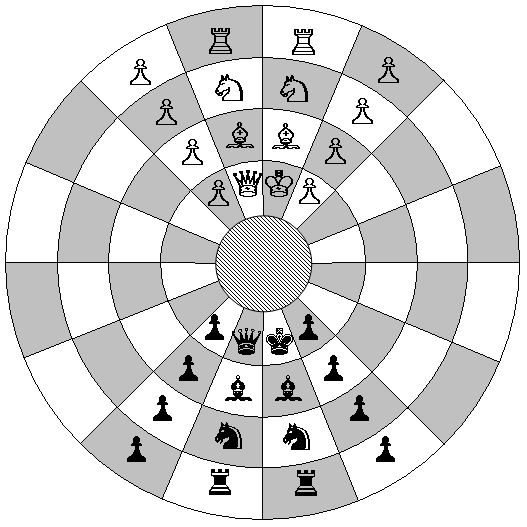
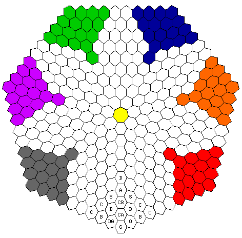
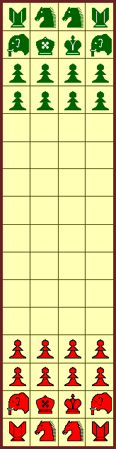
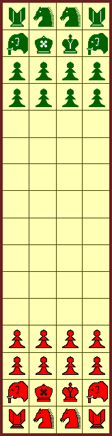

Lo sentimos.
La página no está completamente traducida,
algunos contenidos pueden faltar o estar abreviados.
Este apartado no quiere ser, ni de lejos, un relato de la historia del ajedrez, quedando fuera, por
ejemplo,
las variantes más orientales que personalmente desconozco. La intención es dejar constancia de todos los
referentes históricos que, de una u otra manera, han tenido algún tipo de influencia en el diseño de
C'escacs, acompañándolos con algunos datos históricos adicionales, cuando menos, interesantes.
Ajedrez
primitivo
El origen del ajedrez es desconocido, pero en general se considera que el juego del Chaturanga
en la India, mencionado en el Mahābhārata, sea el precursor más antiguo. Hay constancia que se
jugó al Chaturanga desde el siglo VI.
Teniendo en cuenta que, después del tiempo de Alejandro Magno, los griegos mantuvieron durante
varios siglos un estrecho contacto con la India, se considera que el silencio de los escritores griegos
en cuanto a la existencia del ajedrez es una evidencia de la inexistencia del mismo.
Como dijo Daniel Willard Fiske (1831-1904):
Antes del siglo VII de nuestra era, la existencia del ajedrez en cualquier país
no es demostrable con la más mínima evidencia documental o fiable. Más allá de aquella fecha, todo son
impenetrables tinieblas.
Daniel Willard Fiske
The Nation, Nueva York. 7.6.1900, página 436
Chaturanga
Chaturanga
(चतुरङ्ग) es un juego con origenes en el imperio Gupta, y vendría a significar cuatro ejércitos
(literalmente, que tiene cuatro miembros, chaturanga - चतुरङ्ग caturaṅga, catuḥ: "cuatro";
anga: "brazos"), siendo hasty-ashwa-ratha-padatam (elefantes-caballos-carros-infantes)
la formación clásica de los ejércitos de la Índia, tal como describe el
Akshauhini
en el Mahabharata.
La referencia más antigua conocida data del siglo VI DC, aunque los ejércitos representados
corresponden
a la época de Alejandro Magno y el imperio Maurya, entre el siglo IV AC y el siglo II AC,
existiendo también un ajedrez chino (Xiangqi, 象棋) con representaciones que corresponden al
siglo I AC. Curiosamente las referencias más antiguas no son directamente del
Chaturanga, sino de la llegada como Shatranj
a Persia desde India, y algunos textos más difusos de China.
Posiciones iniciales en el Chaturanga.
Las casillas del tablero eran de un único color.
El Rajá se posicionaba en el tablero en la derecha de cada jugador,
de manera que los Rajás de los dos oponentes no quedaban enfrentados.
El movimiento era equivalente al movimiento del Rey en el actual
ajedrez, y es posible que existiese un movimiento inicial especial.
El Mantri (Consejero) no tenia movimento por todo el tablero,
puesto que únicamente movía una casilla en diagonal. Así solo movía
por lo que en un tablero moderno serían los escaques blancos;
esta característica se denomina debilidad de color.
Los Padàti / Bhata / Sainik (los tres nombres son válidos),
tendrían un movimiento equivalente a los peones actuales, pero sin el movimiento
doble inicial de salida; no tenemos información referente a la promoción,
pero probablemente se determinaba según la casilla que se alcanzaba.
Los Ashva / Ashwa (Caballos); tendrían el mismo movimiento que el
Caballo del actual ajedrez.
No hay seguridad del movimiento del Ratha (Carro), pero muy
probablemente coincidía con el actual Roque (Torre) del ajedrez.
Movimento del elefante en el ajedrez birmano (Sittuyin)
Thanks to: Boedawgyi, CC BY-SA 3.0 via Wikimedia Commons
En el caso de los Gaja (Elefantes) se desconoce exáctamente el movimiento,
exisitiendo diferentes teorías; personalmente suscribo la probabilidad de que
el movimiento coincida con el que ha persistido en algunos ajedreces del sudeste
asiático y también en el General de Plata del Shogi
japonés, ya descrito por
Al Biruní sobre el año 1030, en su libro India.
El movimiento de dos casillas en diagonal se presenta en los Nauca (barcos)
del Chaturaji, donde se hace evidente su debilidad. Este movimiento se
trasladó al Xiangqi chino y al Chatrang persa, que a su vez se
trasladó al Shatranj árabe, pero el elefante en la India es poco probable
que se representase con una pieza tan debil, como puede apreciarse en la
variante india del ajedrez moderno.
Tampoco hay total seguridad del moviment del Ratha (Carro), aunque se piensa que el
movimiento corresponde exáctamente al movimiento de la moderna Torre. Tenemos múltples
juegos con los movimientos horizontales y verticales, como el Chaturaji de la India, en el Shatranj
árabe, y en muchos otros juegos en diferentes lugares: en el 飛車hisha (carro volador) del shōgi
(将棋) japonès, en el
车carro del Xiangqi (象棋) chino,
o en el Hnefatafl vikingo; además, aunque no nos han llegado
las reglas, parece que también existiria este movimiento en el Ludus latrunculorum de los romanos, o incluso en la Petteia de los griegos.
También es posible que el Xaturanga evolucionara, existiendo más de una
versión, o variantes por zonas, y el éxito y la estandarización del Shatranj en el próximo mundo islámico podía ser visto como una variante más.
Así, la reputación del origen persa del Shatranj, probablemente fuera quien dejó al
Xaturanga olvidado; la época islámica de la India empezó con las primeras colonias en el
siglo VIII y sultanatos a partir del siglo X, pero la importante era mogola no empezó hasta el
siglo XVI, y desde el siglo XVII ya quedó patente la influencia en la India del ajedrez occidental.
Chaturaji
Posición inicial del Chaturaji;
los aliados se posicionan en esquinas opuestas.
Chaturaji
significa cuatro rajás,
y es una evolución del Chaturanga en la
misma Índia. Era un juego que incorporaba dados que el jugador tiraba para determinar que
pieza debía mover. Incorpora el Nauca (Barco), que salta dos casillas
diagonalmente, con lo que las casillas que puede alcanzar queda muy limitado. En este juego
el Gaja (Elefante) mueve como el actual roque (torre),
representando la pieza más potente.
La pieza a mover se determinaba con un dado largo de cuatro caras:
Pedàti (Peón) o Rajah (Rajá)
Nauca (Barco)
Ashva (Caballo)
Gaja (Elefante)
También se puede usar también un dado tetraédrico de cuatro caras,
o si solo tenemos un dado cúbico (hexaedro) usar el valor cinco equivalente
al valor uno, y el seis equivalente al cuatro.
La valoración de las piezas era:
Pedàti (Peón): 1
Nauca (Barco): 2
Ashva (Caballo): 3
Gaja (Elefante): 4
Rajah (Rajá): 5
Mientras Chaturanga significaría "cuatro armadas": infantería, caballería, carros y elefantes,
Chaturaji quiere decir cuatro rajás, una forma de decir cuatro jugadores. El ajedrez
con más de dos jugadores tiene tendencia a degenerar, perdiendo el componente estratégico para
prevalecer la diplomacia entre los jugadores, desequilibrando el juego. Pero recordamos que el
Chaturaji es un juego con un gran componente de azar, y, además, en el Chaturaji
parece que los jugadores forman dos parejas, jugando una pareja contra la otra. En cualquier caso,
puede ser un juego inspirado en el ajedrez y con ciertas conexiones, pero no puede considerarse un
ajedrez, como podríamos decir del Chaturanga u otras variantes que citaremos aquí.
Reglas del Chaturaji
El objetivo no es el Rajá enemigo, que es una pieza más del tablero, sino hacer puntos capturando
piezas; la excepción es la regla que da la partida ganada al jugador que captura los Rajás
de los otros tres jugadores, obteniendo los puntos equivalentes a las tres armadas enteras, 54
puntos, puesto que cada armada está valorada en 18 puntos. Esta victoria se denomina
Chaturaji.
El orden de los turnos de los jugadores es en el sentido de las agujas del reloj, y los
jugadores enfrentados son aliados. Cada jugador mueve dos piezas en cada turno lanzando un
dado dos veces o lanzando dos dados simultáneamente. Cuando ambos dados indican el mismo tipo
de pieza, se puede mover la misma pieza dos veces, o si se dispone de dos piezas de ese tipo,
se pueden mover dos piezas diferentes de ese tipo. Si el movimiento de la pieza indicada por
el dado es imposible, o, si el jugador no quiere moverla, ya que el jugador no está obligado
a mover, entonces se pierde el turno completo.
Hay que tener en cuenta que cuando se juega con dos dados y se da el caso en la segunda tirada,
el primer movimiento ya se había hecho, y no se deshace; por lo tanto, es diferente jugar con
un dado o con dos. También hay que tener en cuenta que las piezas aliadas pueden ser capturadas,
pero no las propias.
La partida termina cuando no quedan fichas en juego de los jugadores contrarios, pero también puede
terminar cuando todos los jugadores están de acuerdo en poner fin a la partida. Al final de la
partida, se cuentan los puntos. Otras reglas:
Shatpada (seis pasos): promoción de peones
Si se dan las condiciones, un peón que alcance la última casilla promocionará al tipo de
pieza que estaría colocado en esa columna en la disposición inicial (de tu propia columna
o de la columna de tu aliado).
Cuando un peón alcanza la última fila pero no puede promocionar, permanece como peón en la
casilla de la última fila. En cuanto pueda promocionar, el peón se convierte en la pieza
correspondiente. Mientras tanto, el peón puede ser capturado.
Cuando un jugador todavía posee tres o cuatro peones no puede promocionar peones.
Cuando un jugador tiene uno o dos peones, puede promocionar a
Caballo o Elefante.
Sólo cuando un jugador posee un peón y el Rajá, y como máximo el Barco,
pero ninguna pieza más, puede promocionar a Barco, o a un segundo Rajá.
Como excepción, un jugador sin Rajá siempre puede promocionar a Rajá cuando
un peón alcanza la última fila de la columna de un Rajá.
Vrihannauka: Triunfo del barco
Cuando un Barco se mueve de tal manera que se forma un cuadrado de 2×2 lleno de
barcos, captura los tres barcos de los otros jugadores.
Captura del Rajah
Si un jugador pierde su Rajá no puede mover ninguna pieza, excepto peones.
Sus piezas permanecen en el tablero y pueden ser tomadas.
El compañero puede elegir intercambiar Rajás y rescatarlo sustituyéndolo.
Los peones de un jugador que ha perdido su Rajá no pueden capturar un
Rajá.
Al capturar un Rajá enemigo, si el Rajá del compañero ha sido capturado
por ese ejército enemigo, se le puede exigir el cambio de Rajás, y entonces
ambos Rajás vuelven a su posición inicial, o a una adyacente si está ocupada.
En caso contrario, el jugador que capture al último Rajá enemigo, si el Rajá
de su compañero también ha sido capturado, tomará el control del ejército aliado para
derrotar a los enemigos congelados utilizando ambos ejércitos.
Sinhasana
Quien mueve un Rajá para entrar en la casilla original de otro Rajá se dice que
ha ganado una sinhasana. Si un jugador gana una sinhasana en el trono del
jugador aliado (jugador cuyas piezas están enfrente), ambos aliados toman el control de ambos
ejércitos. Las reglas de la sinhasana en un trono enemigo están relacionadas con las
apuestas.
Cacacashta
Cuando un Rajá se queda sin su ejército no es ni una victoria ni una derrota.
Era un juego con apuestas, y algunas de las reglas eran complicadas, no las conocemos bien e incluso
puede que tuvieran versiones en distintos lugares. En cualquier caso, podemos agregar algunas
reglas adaptadas para jugar con puntos:
Recuento de puntos: Las parejas pueden mantenerse o cambiarse a lo largo de una serie de
partidas diferentes, conservando los puntos obtenidos por cada jugador, pero debe tenerse en
cuenta que una serie típica de partidas sería una serie de cuatro partidas, sin cambiar de pareja.
Recuento de puntos en caso de cacacashta: La situación de cacacashta (Rajá
solitario) significa que nadie cuenta los puntos de las piezas capturadas a ese ejército
(jugador) durante esa partida, es como un empate con ese jugador; el Rajá es retirado del
tablero y las piezas son devueltas al jugador (no cuentan), quien también devuelve cualquier
pieza que hubiera capturado (tampoco cuentan). Nótese que el aliado puede forzar la situación
capturando la última pieza aliada.
Sinhasana en un trono enemigo: Obtener un sinhasana en un trono enemigo
duplica el valor de su Rajá (10 puntos) si se captura mientras el trono permanece ocupado, pero
capturar al Rajá enemigo en su trono obteniendo un sinhasana, es decir, capturar
al Rajá enemigo en su posición inicial con el Rajá propio, es aún más valioso, y
cuadruplica su valor (20 puntos). Observar que si rescatan el Rajá de cualquier manera,
con el Rajá rescatado se pierden las ventajas del sinhasana; no es el caso en la
promoción de un peón, pues en ese caso se nombra un nuevo Rajá.
Fin de partida por captura de Rajá: Cuando ambos Rajás enemigos han sido
capturados y también todos sus peones, y por lo tanto ambos ejércitos enemigos están
definitivamente congelados, el número de turnos finales puede ser limitado, por ejemplo a cinco
turnos, es decir diez movimientos para cada jugador restante; esta regla es para evitar un final
interminable.
La palabra del sánscrito चतुरङ्ग (chaturanga) en persa medio o pahlavi pierde la 'u' por
síncopa y la 'a' final por apócope (chatrang: چترنگ). Por este motivo, generalmente se
denomina Chatrang a la versión persa, que a su vez dió lugar al
Shatranj árabe, por una posterior transformación fonética más sutil.
Existe un texto
en persa medio (pahlavi sasánida)Explanation
of Chess and arrangement of Vin-Artakhshir
que es la historia más antigua sobre la invención de los juegos de ajedrez
y backgammon, fechada en el siglo VI de nuestra era, durante el gobierno del
gran rey de reyes sasánida, Cosroes I (501-579 EC, rey desde 531).
Además, otros tres textos en Persa Medio mencionan los juegos del ajedrez
y el backgammon en un contexto que deja claro que formaba parte de la educación
cortesana. Khusro ud Rēdag (Cosroes y el Paje) se refiere
a la misma época, pero Kārnāmag ī Ardaxšīr ī Pābagān
(Libro de los hechos de Ardacher, hijo de Pabag) hace referencia a
la época de la creación del imperio sasánida (inicio del siglo III),
pero este texto, sin embargo, parece ser una compilación tardía fechada en el
siglo VII, probablemente durante el reinado de Cosroes II.
El texto, muy conocido por haberse incluido posteriormente en el
Shāhnāmé,
epopeya nacional de Persia, escrita y compilada por
Ferdousí
sobre el año 1000,
explica como un cuento oriental la llegada del Chatrang a Persia
desde India, eso sí, reservándose la creación del Nêw-Ardaxshîr, que
pronto dio lugar al Nard, que a su vez después se transmite a India
y es el precedente del Backgammon. Las últimas dataciones del texto
original lo sitúan a alrededor del año 600, coincidiendo con las primeras
evidencias arqueológicas del ajedrez en Irán, un elefante cortado en piedra
negra datado en el fin del siglo VI o VII. Copiamos aquí una
breve traducción
adaptada del texto:
Dêwisharm (Divsaram), un rey indio identificado con
Deva
S'arvavarman, un rey de
Kanauj de la dinastía Maukhari, por Renate Syed,
profesora de sánscrito envió a su visir, Tâtarîtos
(Takhtritus), a la corte de
Cosroes I
Anôshag-ruwân
(alma inmortal), Shâh de Persia, con muchos presentes:
Un conjunto de 16 piezas de esmeralda y 16 de rubí, 90 elefantes y 1200 camellos
cargados de oro, plata, joyas, perlas y lluvia.
Un desafío acompañaba a esta caravana:
Como tu nombre es Rey de Reyes, eso significa que tus sabios deben ser más sabios
que los nuestros. O descubres los secretos de este juego, o pagas tributo.
Cosroes pidió unos días para resolver el enigma. El último día,
Bozorgmehr se levantó y le dijo a su rey:
Resolveré este juego fácilmente y me aseguraré los ingresos y el tributo de
Dêwisharm y prepararé otra cosa y se la enviaré a Dêwisharm que no podrá resolver
y le exigiré el doble de tributo; y ten por seguro que mereces el emperador, y
los sabios de aquí son más sabios que los de Dêwisharm.
Llamó a Tâtarîtos ante él y dijo:
Dêwisharm hizo este juego de ajedrez como la guerra. Hizo que los Reyes
(Shâh) fueran como dos señores, que los Ministros (Mâdayâr o Rox)
fueran esenciales para los flancos izquierdo y derecho, que el General (Frazên)
se pareciera al jefe de los guerreros, que el Elefante (Pîl) se pareciera al jefe
que protege la retaguardia, que el Caballo (Asp) se pareciera al jefe de los
jinetes, y que los Peones (Payâdag) se parecieran a los soldados de a pie
en el frente de batalla.
Entonces Bozorgmehr propuso al Cosroes que enviara a Dêwisharm un
juego de su invención, el Nêw-Ardaxshîr (Ardacher-bravo), llamado
así en honor de Ardacher, el fundador de la dinastía. Este juego utilizaba
15 piezas negras y 15 blancas sobre una mesa inspirada en el movimiento de los
astros y el ciclo de los días.
Según Al-Tha'alibi, los árabes, cuando entraron en
Ctesifonte, capital del imperio sasánida de Pèrsia, encontraron unos
trebejos de rubís y esmeraldas, que pertenecían a Cosroes II.
Se ha de entender el texto en un contexto en que se considera el backgammon
como un juego superior: mientras que el ajedrez es un juego vinculado a la batalla,
el backgammon se basa en el lanzamiento de dados y, por tanto, en el destino. Según
algunas tradiciones del zoroastrismo de la época sasánida, el destino dominaba y
controlaba la vida humana. Una traducción comentada se puede encontrar en:
On the Explanation of Chess and Backgammon.
En el texto, los persas tienen que adivinar las reglas del juego, que Bozorgmehr
consigue, y después ganó tres partidas a Tâtarîtos. La gran simetría de los
movimientos de las piezas (ver el dibujo adjunto al
Shatranj) me hace pensar personalmente en alguna
alteración respecto del chaturanga, y concretamente pienso en los movimientos
del elefante; es cierto que tampoco el movimiento del carro es conocido,
pero la conjetura de haberse mantenido el movimiento es muy sólida.
Persia, justo antes del inicio del reinado de Cosroes I, acogió los sabios
de la Academia de Atenas (Escuela Neoplatónica), clausurada por
Justiniano I en 529.
Durante toda la edad media las matemáticas persas fueron una importante aportación
dentro del mundo islámico, y en todo el occidente, pero también es cierto que en la
época se buscan significados teológicos y trascendentes en las simetrías y la
geometría.
Difusión del Chatrang
persa en Occidente
Barco de marfil de inicios siglo XII, Vawkavysk,
Bielorrusia, Museo de arte Bielorruso, Minsk.
La palabra Shah dio lugar a las palabras xaque en castellano
(posteriormente jaque), así como chess y check
en inglés. El nombre del elefante (Fil) se ha preservado en el castellano como
Alfil, pero también en catalán, italiano, turco y persa; en ruso se usa directamente
la palabra слон (elefante). Además, el nombre de Ferz se ha
preservado en ruso (Ферзь) para la Dama, y como vezér en húngaro.
Se consideran estas raíces filológicas en las palabras rusas, vinculadas directamente con
el persa, junto con otras evidencias arqueológicas, la prueba de la conexión persa del
ajedrez en el oriente de Europa, concretamente entre los eslavos.
En ruso se mantiene el nombre de Elefante (слон) para
el alfil, y curiosamente desde tiempos remotos se usa el nombre
Ладья (barco), en lugar de la versión original carro,
para las torres, que podría justificarse por la influencia varega y la
importancia de los barcos para esta cultura, aunque se ha de señalar que el tipo de
barco no se refiere a un drakkar vikingo, sino a una embarcación eslava.
En el imperio romano de Oriente el ajedrez se denominó zaquitrion. La evidencia filológica ha establecido, al parecer
de manera segura, la procedencia del nombre zaquitrion como una helenización
del persa Chatrang y no del árabe Shatranj. Este origen persa de la palabra
puede permitir fechar el conocimiento del juego en Bizancio probablemente con anteriorioridad
al año 661 EC, fecha en la que los invasores impusieron la lengua árabe a sus súbditos en
todo el imperio Omeya. A pesar de que el persa medio demostró ser muy duradero, si se hubiese
dado en una fecha posterior, por ejemplo, si fuese ya en la dinastía Abbásida (750 EC),
lo natural seria observar una procedencia del árabe, particularmente considerando que
los árabes rápidamente se apropiaron del juego, y la importancia que le dieron al ajedrez.
Shatranj
Los movimientos de las piezas del Shatranj eran
complementarios, si
se excluyen el Shah (Rey) y el Sarbaz (Peón).
El Shatranj fué la
evolución del Chaturanga en Persia, y desde allí llegó al mundo árabe hacia el año 530,
cien años antes que la conquista musulmana de Persia. Está documentado mediante
referencias en árabe del periodo medieval, pero se desconoce si, como asegura la documentación
árabe,
coincide exáctamente con la versión que se jugaba en Persia.
El juego, a diferencia del Chaturanga de la India, está bien documentado.
El tablero continua siendo monocolor.
Las piezas eran: Shah (equivalente al rey), Firz
(Ferz, visir, en persa, Alfersa o Regina medieval), Fil
(elefante, en persa, primitivo Comes, Curvus o Alfil medieval,
en otros paises Cazador, Arquero o Obispo),
Asb (Faras) (caballo, en persa; en muchos países medievales tomó el
nombre de Caballero), Ruhk (carro, en persa, la actual Roque
o Torre) y Sarbaz (soldado, en persa, posteriormente traducido como
Baidaq, el actual Peón, sin movimiento doble inicial, que alcanzando
a la octava fila promocionaba a Ferz).
Los Shahs se posicionan enfrentados, a diferencia de la posición inicial del
Chaturanga, y, por descontado, no existía el enroque.
Por ello, los Firz (Ferz, visir, en persa), que juegan con
debilidad
de color, no pueden capturarse entre ellos; mueven una casilla en diagonal.
El Fil (elefante, en persa) salta dos posiciones diagonalmente en cualquier
sentido. Igual que el Nauca (Barco) del Chaturaji. Además de
la debilidad
de color, las casillas que podía alcanzar eran todavía más limitadas, tan
solo una octava parte del tablero. Además, las casillas alcanzables de los cuatro
Elefantes del juego eran disjuntas, de manera que los elefantes propios eran
complementarios, alcanzando entre ambos tan solo la cuarta parte del tablero, y no
era posible capturar con un Elefante un Elefante del oponente.
El final de la partida se daba en tres casos diferentes:
Dejar al oponente sin movimientos posibles (ahogado) también era una
victoria; se ha de pensar en términos de capturar el Shah,
puesto que en situación de ahogado, si mueve, se puede capturar.
Desnudar el Shah: Capturar todas las piezas contraries, a parte del
Shah, suponía la victoria, excepto si el oponente podía capturar la
última pieza rival en la siguiente jugada, y en ese caso la partida acababa
en tablas.
En el Xatranj se definieron problemas para resolver (mansūbātمَنصوبة), y también posiciones de apertura
(tabiya, تَعْبِيَة), donde, a pesar de no indicar
la manera de alcanzarla, se estudiaban las diferentes ventajas y movimientos desde la
posición, que los jugadores trataban de imitar. También se estimaron la valoración de las
piezas, calculadas simbólicamente en Dírhams (darāhim), y se establecieron
categorías entre los ajedrecistas, y la ventaja que tenía que conceder un jugador
de una categoría superior cuando jugaba con uno de categoría inferior; de hecho,
reglas de hándicap similares fueran frecuentes en el ajedrez occidental en
la era romántica del ajedrez,
durante los siglos XVIII y XIX.
Los grandes jugadores eran famosos en la corte y muchos conocidos eruditos escribieron
libros sobre el Xatranj durante la Edad de oro del islam, en la época
de la Gran Biblioteca de Bagdad (la
Casa de la Sabiduría), primera universidad del mundo
que va absorbió los eruditos persas de Gundeshapur, donde encontramos eruditos tan
importantes como el historiador Al-Massudí, nacido en el mismo Bagdad ya en el
siglo X, y que menciona las diferentes variantes de Xatranj que existían en
su época. Se escribieron diferentes libros sobre el ajedrez, estudiando las
tabiyatتعبية (problemas de ajedrez) y manṣūbātمَنْصُوبَة (aperturas), libros que han llegado hasta nuestros
días:
Kitāb al-Shiṭranj
(كتاب الشطرنج842) Libro de ajedrez.
Este es el libro más antiguo conocido que trata sobre el Xatranj,
aunque en China existe un libro anterior que trata sobre el ajedrez
chino, el Xiangqi, que escribió Niu Sengru
(牛僧孺) (780 – 849) a principios del siglo IX.
Kitāb al-Shiṭranj al-Nisḥa al-Awala
(كتاب الشطرنج النسحة الاولة)
Primera versión del libro de ajedrez.
Kitāb al-Shiṭranj al-Nisḥa ath-Thānīa
(كتاب الشطرنج النسحة الثانية)
Libro de ajedrez segunda edición. Libro sobre estrategia
ajedrecística, aperturas comunes de ajedrez, problemas estándar en
el medio juego, finales anotados y la primera descripción conocida
del problema del recorrido del caballo.
Ejemplo de
Mansuba (مَنصوبة) en Shatranj:
Mansuba de Dilaram (siglo IX)
Cuenta la leyenda que Dilaram, favorita del gran visir Murdaui,
presenciaba una partida en la que su esposo había cometido el desatino de
apostarse a su esposa predilecta. Murdaui estaba a punto de recibir
mate. Viendo Dilaram la posición le susurró a su esposo la variante
ganadora:
La llegada del Shatranj en Córdoba se atribuye a
Ziryab
(أبو الحسن علي ابن نافعAbu l-Hasan Ali ibn Nafi), también conocido
con el sobrenombre de mirlo negro, un liberto de ascendencia negra, que
llegó a Algeciras el 822 EC. procedente de la corte de Bagdad, para residir a la corte
de Abderramán II de Córdoba (792-886). Fue un poeta, músico, cantante, esteta y
gastrónomo musulmán que introdujo múltiples costumbres y modas en la sociedad de la
época, muchas de las cuales todavía persisten. También creó el primer conservatorio de
música del mundo islámico, y perfeccionó el laúd, añadiéndole una quinta cuerda.
A pesar de que no se puede confirmar con seguridad haber sido el protagonista de la
introducción del Sharanj en la corte de Córdoba, su gran influencia en
aquella corte, y, en general, en la sociedad del emirato, permite afirmarlo sin
mucho margen de error. Los inició en las modas y costumbres de la civilización
bagdadí, que aceptaron como reglas de conducta social y urbana, incluso en aspectos
tan íntimos como la higiene o la limpieza y otros ligados a la propia moral y a la
lengua. Introdujo las formas protocolarias orientales, y la misma sociedad cambió
muchas costumbres siguiendo las nuevas normas y las nuevas modas.
Variantes más tempranas del
Shatranj
El historiador Al-Masudi (المسعودي), muerto en
956, escribió el Murūj aḏ-Ḏahab wa-Maʿādin al-Jawhar
(مُرُوج ٱلذَّهَب وَمَعَادِن ٱلْجَوْهَرLas praderas de Oro y Minas de Gemas). Entre otras cosas, este texto describe
cinco variantes de Shatranj: Shatranj oblongo (al-Mustatîla),
Shatranj completo (at-Tâmma), Shatranj circular o
Shatranj bizantino (ar-Rûmîya), Shatranj celeste
(al-Falakîya y Shatranj de los órganos (al-Jawârhîya).
Hoy en día conocemos muy poco sobre este último, el Shatranj de los órganos,
y desconocemos los detalles, pero de todos modos, parece no estar relacionado con
lo que hoy entendemos por ajedrez, aunque tampoco lo está el
Shatranj celestial.
Este era un Shatranj que se jugaba con dados, moviendo una pieza
según el tipo de pieza que determinaba el valor del dado (6=Shah, 5=Firz,
4=Elefante, 3=Caballo, 2=Roc, 1=Peón) en un tablero rectangular formado
por 16×4 casillas, que a menudo aparecía detrás del juego de tablas del
Nardo (backgammon). Observamos que, efectivamente, el ajedrez en
la Edad Media fue un juego de azar y apuestas.
Existían varias posiciones iniciales alternativas. En caso de jaque, si
el dado no permitía mover el Shah, el jugador perdía el turno, y
solo se perdía la partida cuando el Shah era capturado, o todas
las piezas, excepto el Shah eran capturadas.
Este Shatranj usaba un tablero de 10×10 casillas, añadiendo dos
piezas a cada jugador. Es el ajedrez decimal (en un tablero de
10×10) más antiguo conocido. Existe constancia de dos variantes:
Incorporando una pieza (cuatro, dos cada jugador) que denomina
Dabbābah (máquina de guerra), que en este caso tenía
los mismos movimientos del Shah.
La pieza Dabbābah aparece en diferentes
variantes a lo largo de la historia, con diferentes movimientos.
Incorporando una pieza llamada Camello (cuatro, dos cada jugador)
que en este caso parece que movería saltando ortogonalmente a la tercera
casilla, complementando el movimiento diagonal de los Elefantes.
Este movimiento no es tan limitante como el del Elefante, y
permite alcanzar una cuarta parte de las casillas, de forma que los
cuatro Camellos disjuntos alcanzarían la totalidad del tablero,
pero sin que les sea posible capturarse entre ellos.
También se da el caso que el Camello aparece en
diferentes variantes a lo largo de la historia, pero su movimiento
típicamente es diferente de este, mientras que este movimiento a veces
se vincula con el Dabbābah, dejando para el Camello un
movimiento parecido al Caballo, pero más alargado (3×1 y 1×3
en lugar de 2×1 y 1×2).
El Shatrang at-Tâmma tenía algunas reglas diferentes de las del
Shatranjortodoxo:
Los peones promocionan a Ferz, pero si el jugador no ha perdido
todavía el Ferz, el Ferz existente es confiscado
por el adversario.
Si el Shah consigue alcanzar la casilla inicial del Shah
del oponente, el jugador obtiene media victoria.
Un Shah solitario no es una condición de finalización, y el
juego debe continuar.
Escacs circulars: Al-Muddawara
Al-Muddawara (Zaquitrion).
Image: Dogface, CC BY-SA 3.0,
via Wikimedia Commons
Se tiene que entender el ajedrez circular sencillamente como un
Shatranj que se juega en un tablero
circular. Los árabes los denominaron Shatranj ar-Rumiya
(ajedrez bizantino) o Shatranj al-Muddawara (ajedrez circular),
y consistía en 64 casillas, organizadas en cuatro anillos concéntricos con
16 casillas cada uno. Solo se requiere considerar dos reglas, debidas a la
topología circular del tablero:
Los peones promocionan al avanzar seis casillas, llegando a la
hilera donde se posicionan al inicio las figuras del adversario
más próximas a este peón.
Dos peones enfrentados, peones de jugadores contrarios,
situados en el mismo anillo y casillas consecutivas, pueden ser
retirados en el siguiente turno, sin contar como movimiento.
Los documentos en la Biblioteca Británica y en otros lugares sugieren que
el ajedrez circular se jugó en Persia ya en el siglo X EC, y otras
referencias se encuentran en la India, y más tarde, en Europa.
Tiene que destacarse que el Libro
del ajedrez, dados y tablas de Alfonso X, escrito en el
siglo XIII, no recoge el ajedrez circular; se puede deducir que al menos
entonces no tenía mucha relevancia, ni para Europa, ni para los eruditos
árabes, que fueron la fuente principal del manuscrito de Alfonso X,
y de los cuales tampoco tenemos muchas referencias.
Aun así, también se ha de considerar que tampoco aparece ninguna referencia
al ajedrez oblongo, a pesar de
dedicar un capítulo a los juegos de dados, y otro a los juegos de tablas,
que a menudo acompañaron al ajedrez oblongo por el reverso.
Ibn al-Jatib, poeta, escritor, historiador, filósofo y político granadino
que vivió en el siglo XIV, con familia de origen yemení que llegó a Al-Andalus
en el siglo IX, documenta la creación del ajedrez circular, que según él se
recoge a un manuscrito del año 618 encontrado en Estambul, en el cual se
describen un ajedrez redondo, circular, llamado, Rumi, la invención del
cual atribuye a Abu Ali Ibn Rashiq al-Murci (fallecido en 694). El
término Rumi proviene de la palabra que los árabes empleaban para designar
los territorios del Imperio Romano, y el ajedrez redondo a menudo se encuentra
mencionado como Shatranj ar-Rumiya (ajedrez bizantino) en las obras
árabes.
La referencia más temprana y más válida es la de Al-Massudí (siglo X)
en su obra enciclopédica de historia del mundo
Meadows of Gold and Mines of Gems, y podría ser relevante que
los denominara Shatranj ar-Rumiya (ajedrez bizantino), a pesar
de que no existe ninguna otra evidencia histórica que vincule el nombre con
Bizancio, más que el nombre que los árabes le dieron y alguna leyenda,
también árabe, muy posterior.
Versión moderna del ajedrez circular

Ajedrez circular.
Image: Dogface, CC BY-SA 3.0,
via Wikimedia Commons
El ajedrez circular proporciona al Shatranj un mayor dinamismo,
proporcionando más potencia en las torres, pero desgraciadamente,
perdiendo un poco de potencia los caballos. No es una solución óptima,
y por este motivo no ha superado la prueba del paso del tiempo, pues
la complejidad del tablero circular no aporta suficientes mejoras:
fuerza la creación de dos frentes, pero encajona más las piezas,
delimitando mucho más su área de influencia, excepto el caso de las torres.
Incrementa la potencia de las torres, pero rebaja ligeramente la del
caballo (¼), haciendo el juego más desequilibrado. Además, la ausencia
de esquinas hace que el jaque mate sea más complicado de conseguir, por
lo que probablemente la mayoría de las partidas acababan desnudando
al Rey, o en tablas, un final mucho menos artístico que
en el Shatranj tradicional.
La versión moderna del Shatranj circular es el ajedrez
circular, incorporando el movimiento del Alfil y la Dama
modernos, pero, desgraciadamente, el movimiento del Alfil se
encuentra muy perjudicado al pasar de un damero cuadrado a la versión
circular. La Dama, consecuentemente, también tiene un perjuicio
en sus movimientos diagonales, pero ya se ha dicho que los movimientos
ortogonales de las Torres ganan en potencia, y por tanto, también
el de la Dama queda compensado; podemos pensar la situación con
tres piezas de movimiento ortogonal cada jugador, en un damero que solo
tiene cuatro filas, con la potencia disminuida del Caballo y del
Alfil.
No queremos decir que no sea un juego perfectamente jugable, además, con
la ventaja que no existen grandes estudios sobre aperturas, como en el
ajedrez ortodoxo, permitiendo un juego agradable para practicar ajedrez
sin las consideraciones vinculadas a las aperturas estudiadas, y con un
enfoque diferente, motivo por el que se practica en muchos clubes,
particularmente en Inglaterra. Pero probablemente el comportamiento es
preferible como Shatranj que como ajedrez moderno.
Convertir la afición al ajedrez circular en una competición
comporta volver al estudio de las aperturas, y entonces se pierde la
condición de juego más relajado.
Además de incorporar el movimiento del Alfil y la Dama modernos,
hay que tener en consideración algunas reglas adicionales en la versión
moderna del ajedrez circular:
La posición inicial de las piezas cambia respeto la versión tradicional,
de forma que ambos Reyes quedan enfrentados (ver la diferencia
en la imagen del ajedrez circular respecto de la de la
Al-Muddawara).
Aunque se incorpora el movimiento doble de los peones, no existe
la captura al paso, y tampoco existe el enroque.
Se aplican las reglas del ajedrez moderno para la finalización de la
partida: el ahogado son tablas, y no existe la victoria si se deja
al Rey desnudo, sin piezas.
Los peones se coronan después de mover seis casillas desde su posición
inicial, al escaque inmediatamente anterior a la línea inicial del oponente.
La regla que permite retirar los peones enfrentados no se aplica.
Anunciar el jaque no es obligatorio, y se permite capturar el rey contrario
si este no se retira de una posición de jaque, ganando la partida.
En la versión moderna se incorpora la potencia de la reina: tan solo existen
cuatro anillos, y tres piezas de movimiento ortogonal para cada jugador.
También se puede criticar que los movimientos diagonales modernos de largo alcance
no se visualizan con claridad en el tablero circular, y pueden no resultar obvios.
La afición al ajedrez circular moderno radica en el las grandes diferencias,
tanto en las aperturas, que no están estudiadas, como en los finales. Los finales
básicos en ajedrez circular son: rey y dama; rey, torre y pieza menor o rey y
tres piezas menores contra rey. El final rey y peón contra rey siempre gana, a
condición de que el rey no pueda capturar el peón antes de que corone o sea defendido.
El jaque mate es más difícil de conseguir, y muchas partidas que se perderían en el
ajedrez ortodoxo por la diferencia de material, finalizan en tablas.
A pesar que no queda mucha información, en parte porque era un juego pensado
para ser guiado por algún erudito de la época con ciertos conocimientos
de astrología, parece que el juego llamado Escaques detallado por
Alfonso X en el Libro de los juegos: acedrex, dados e tablas
de 1283 podría ser casi la transcripción del al-Falakîya Shatranj, un
juego para siete jugadores en un tablero circular dividido en siete anillos
concéntricos, cada cual para uno de los astros (por orden: Luna, Mercurio,
Venus, Sol, Marte, Júpiter, Saturno), el más interno para la Luna, y cada uno
de los anillos dividido en escaques. Pero Alfonso X también indica que
no deja las informaciones completas, porque solo tendría que estar al alcance
de sabios.
Los diferentes anillos no tenían el mismo número de escaques, siendo las
cantidades, por orden desde el interior: 12, 24, 36, 48, 60, 72 y 84. Además,
el círculo más interno, interior al anillo de la Luna, se divide en cuatro,
para los cuatro elementos: fuego, aire, agua y tierra. Las siete fichas, una
de cada astro, tenían estipulada color y forma, por ejemplo, para la Luna, la
ficha debía representarse con Una mujer vestida de blanco, y con sus manos
por encima de la cabeza aguantando la figura de la luna, Marte un soldado
clásico, o Venus una mujer con un espejo y un peine.
Era un juego de apuestas muy poco relacionado con el Shatranj,
a pesar de llevar el nombre. Cada jugador iniciaba con doce puntos, y se
jugaba con un dado de siete caras que determinaba qué astro se tenía que
mover, y otro dado indicando cuántos movimientos se tenían que hacer. La
posición resultante del astro respecto de los otros astros determinaba,
siguiendo unas reglas, las ganancias o pérdidas; estas reglas vienen en gran
parte determinadas por la astrología de Claudio Ptolomeo (100 - 170 EC).
Un dado de siete caras generalmente se refiere a un
dado largo, o una perinola, de ocho caras, de las cuales se
descarta uno de los valores.
Ajedrez etíope actual (Senterej)
Actualmente existe el ajedrez etíope (Senterej) que se juega tradicionalmente en Etiopía
y Eritrea. Este ajedrez conserva todos los movimientos del Shatranj, a pesar
de que se caracterizan por unos movimientos iniciales de las piezas que hacen los
jugadores, indeterminados en número y no necesariamente alternados, movimientos que
acaban con la primera captura. Se valora el sentido artístico del juego, considerando
más respetable el mate hecho con la Alferza (Ferz) o con un
Elefante (Fil), y todavía más admirable si lo hace un Peón; los
mates con un Caballo o una Torre se consideran
poco artísticos.
Evolución del ajedrez occidental
El ajedrez occidental se
distingue particularmente por el patrón ajedrezado del tablero.
Image: Nevit Dilmen, Public domain via Wikimedia Commons
Las diferencias más importantes del ajedrez occidental medieval con el Shatranj, además de
algunas reglas que se fueron modificando a largo de los siglos, fueron la aparición del
tablero ajedrezado en dos colores, y la vuelta a las piezas con representaciones
figurativas que habían sido la forma habitual antes del islam, y desde los siglos XI y
XII se fueron recuperando en occidente.
La primera referencia al tablero escaqueado de dos colores es curiosamente también la primera
referencia escrita al ajedrez occidental, el documento, escrito en latín,
Versus de scachis, aunque únicamente lo aconseja
como un medio para facilitar el juego a los jugadores.
También observamos el cambio de nombre en algunas piezas, aunque manteniendo sus movimientos
originales: aparece nombrada la reina, el calvus o curvus para el elefante,
y la torre pierde su significado de carruaje de guerra, un cachivache
que ya no tiene sentido en los ejércitos de la época. Pero los movimientos de las piezas del
Shatranj, aún cambiando de nombre, se mantendran, aunque también aparecen algunos cambios
en las reglas.
Los cambios en las reglas fueron sutiles: la promoción de los peones y el primer movimiento
de algunas piezas (los peones, la regina y el rey), que además tuvieron
variaciones dependiendo de la localización geográfica. El primer movimiento diferenciado se ha
mantenido para los peones, dejó de tener sentido para la Dama cuando cambió sus
movimientos, y para el Rey se convirtió en el enroque.
Algunas reglas tuvieron que esperar hasta el siglo XVII para quedar normalizadas, e incluso algunas hasta la
creación de los campeonatos mundiales en el siglo XIX.
El enroque no quedó definido hasta mediados del siglo XVII, y no se normalizó uniformemente
de manera completa hasta el siglo XIX. Las reglas para la promoción de los peones tampoco
quedaron normalizadas hasta el siglo XIX.
El rey ahogado se comenzó a considerar tablas en Europa a partir del siglo XIII,
extendiéndose lentamente por Europa, siendo casi general después del siglo XV, con la adopción
del alfil y la dama modernos, pero no fue aceptado en Inglaterra hasta el siglo
XIX. En cuanto a considerar como una derrota el caso del rey desnudo, también denominado
en castellano rey robado, sin piezas, se mantuvo hasta después del siglo XV, ya
con la presencia del alfil y la dama modernos.
Entre el año 600, y antes del 712 EC:
Las piezas de ajedrez más antiguas que se han encontrado son las
piezas de Afrasiab,
cerca de Samarcanda, Uzbekistán. Se conservan en el
Museo Afrasiab de Samarcanda. Esta
ubicación se piensa que es el origen del ajedrez occidental. Se pueden
observar las formas del Shatranj persa antes de la dominación
islámica.
En el siglo VIII la difusión del ajedrez por los jázaros, y posteriormente
por vía varega, hacia el Rus de Kiev, antes de la dominación islámica de Persia,
puede ser confirmada por la presencia arqueológica en la
fortificación jázara de Sarkel,
actualmente bajo el embalse de la presa del río Don, cerca de la desembocadura en
el Mar de Azov, un mar conectado con el mar Negro. Sarkel estaba cerca de
la actual ciudad de Rostov, Rusia, y tenía fuertes vínculos con el Imperio Romano
de Oriente.
En la fotografía se puede ver un elefante de marfil encontrado en la
fortificación jázara de Sarkel, fechado entre el siglo VIII y el siglo X.
Actualmente se encuentra en el museo del Hermitage, en San Petersburgo (Rusia).
En las tierras de dominación islámica las piezas del Shatranj eran
geométricas, y no representaban figuras humanas. A pesar de la aceptación
de las otras religiones del libro, otros, como el zoroastrismo
o el budismo, no fueron inicialmente aceptadas. Muchos juegos de
ajedrez de este periodo son de procedencia islámica, y en España incluso de
mozárabes (cristianos dominados) de la península.
Siglo IX‑X:
Los bolos de San Genadio (Pañalba de Santiago, Lleón). Solo se han
conservado cuatro piezas de hueso, asociadas al santo.
Una historia de la España profunda: Podemos leer la historia en
Las piezas de ajedrez de San
Genadio
explicada por el mismo
Miguel Ángel Nepomuceno,
maestro de ajedrez que fué a buscar las piezas, ya mencionadas en
1843 por el escritor Enrique Gil y Carrasco, y en diversas
referencias posteriores.
Siglo IX‑X:
El juego de ajedrez de Venafro (Itàlia) es probablemente testimonio
de la presencia árabe en Venafrum, ocupada entre los siglos IX y X
por las tropas del emir de Bari. Son piezas fabricadas en hueso.
Siglo X:
Las piezas de la excolegiata
de San Pere de Áger, de cristal de roca.
En el siglo XI, el conjunto estaba formado por 96 piezas,
y en el XVI se conservaban solo 44. Actualmente quedan solo 29.
De estas, 19 piezas se conservan en el
Museo Diocesano de Lleida,
pero las otras 10 se encuentran en el Museo Nacional de Kuwait.
Fueron documentades a principios del siglo XIX por el padre
Jaime Villanueva Astengo,
y esto hizo posible su recuperación arqueológica y conservación.
Parece que serian estas mismas piezas las que aparecen en el
testamento de Arsenda de Áger en 1068, en el que le deja
el ajedrez a su marido, y unos años más tarde en un inventario
de Arnal Mir de Tost,
señor de Áger, y marido de Arsenda de Áger, se enumeran
trece tableros de plata, tres juegos de marfil y otros tres de
cristal.
Se piensa que estas piezas podrían haber sido manufacturadas
en Egipto, pero actualmente también se considera Córdoba como
posible taller, en Medina
Azahara, en lugar de Egipto, pero, de cualquier forma, con
toda certeza llegaron a través de Córdoba.
Se puede leer más información en el artículo del sitio web
history.chess.free.fr.
Piezas similares, pero en menor número, se han hallado
en otros lugares de España: San Millán de la Cogolla (La Rioja)
y San Rosendo de Celanova (Orense, Galicia).
Siglo X:
Les piezas de la catedral de la ribagorzana Roda de Isábena
fueron documentadas a principios del siglo XIX por el padre
Jaime Villanueva Astengo:
Un saquillo con varias piezas de cristal, que serán unas
cuarenta entre grandes y pequeñas, dentro del arca llamada de
san Valero, y las identifica como piezas del juego de
escaques antiguo, parecidas a las de Áger. No se conoce la
datación, dado que estas piezas han desaparecido, pero por la
descripción podemos pensar en una datación similar a las de Áger.
Se piensa que aparecen en un inventario de la catedral datado
en el siglo XII, pero no se encuentran explícitamente mencionadas
como piezas de ajedrez.
Siglo X:
Ajedrez fatimí (del Egipto medieval) de Celanova o
Ajedrez de San Rosendo. Se preserva en el museo de la
catedral de Orense, y son unas piezas de cristal de roca
procedentes de San Miguel de Celanova, con 8 piezas
del siglo X: una torre, dos alfiles, dos caballos y tres peones.
Pertenecen al denominado Tesoro de San Rosendo, parece que
extraídas del primitivo sepulcro del santo gallego existente en
Celanova. Posiblemente durante muchos años solo se han considerado
simples vídrios tallados. Actualmente también se considera Córdoba
como
posible origen de las piezas,
un taller de Medina Azahara, en lugar de Egipto.
Siglo X:
En el Monasterio de San Millán de Yuso,
San Millán de la Cogolla (La Rioja), la
Arqueta de San Felices incluye tres piezas de cristal
de roca con forma de piezas de ajedrez árabe (Xatranj).
En este caso parece que las piezas de ajedrez solo fueron
apreciadas como piezas decorativas por los reyes de Navarra.
Año 1008: Inventario de la iglesia de la
abadia de Ripoll,
redactado en el año 1008, en el que se reporta un conjunto
de 28 scacos cristallinos. Desgraciadamente las piezas
de ajedrez no han llegado a nuestros dias.
Año 1010: En el testamento de
d'Armengol I de Urgel, fundador
de la Casa de Urgel, hay una de las primeras referencias a
la posesión de un juego de ajedrez en Europa, donde lo dona a la abadia
de Saint-Gilles-du-Gard de Languedoc. El testamento se hizo
con motivo de la campaña contra Córdoba de los condes catalanes.
Desgraciadamente las piezas de ajedrez no han llegado hasta nuestros
días.
Cincuenta años más tarde, Ermesinda de Carcasona, condesa
consorte de Barcelona, Girona y Osona, cuñada de Armengol I
de Urgel, viuda de su hermano mayor, Ramon Borrell,
hizo donación a la misma iglesia languadocina de sus piezas de
ajedrez, como se puede leer en su testamento de 1058.
En Cataluña se han encontrado diversas referencias tempranas a
juegos de ajedrez en testamentos e inventarios, mostrando la
difusión del juego en estas tierras, y la afición entre la nobleza;
las referencias escritas al ajedrez en el resto del Occidente
cristiano no acostumbran a ser tan tempranas.
Entre finales del siglo IX e inicios del XI:
Roque de azabache angloescandinavo encontrado bajo la posada
'Coach and Horses' de la calle Nessgate de York (UK).
Junto con la pieza gemela encontrada en las minas prehistóricas
de pedernal de Grime's Graves, en Norfolk, podrían mostrar
la pronta introducción del juego en Inglaterra, pero, aún así,
esta presencia de dos piezas individuales idénticas y no
conectadas se podría corresponder con otro juego, por ejemplo,
podrían ser Hnefis (Reis) del Hnefatafl, pero la forma similar a un
roque árabe sería muy inusual; eso sí, recordemos que el
movimiento del Hnefi es el mismo que el de la torre del
ajedrez.
Esta pieza puede evocarnos el recuerdo a las
piezas del rey Canuto,
que se corresponderían en datación.
Siglos XI y XII:
También en Europa se encuentran piezas inspiradas por los diseños
musulmanes del Shatranj, en algunos casos clarament resultado
de intercambios comerciales, como las piezas de Osnabrück (Alemania),
però en otros de clara confección local: huesos de ciervos (Polònia
i Escandinavia), de ballena (Witchampton, Dorset, UK) o de narval
(Escandinavia). Desgraciadamente no existen documentos escritos
asociados, como en el caso de Cataluña.
Desde el siglo XII ya las piezas de ajedrez son principalmente figurativas,
en vez de las figuras abstractas del Shatranj. Esta tendencia parece iniciarse
principalmente en Italia, que haría pensar en una influencia Bizantina. Con
posterioridad, las piezas de la Isla de Lewis, y algunas
piezas rusas, escandinavas
y del norte de Alemania.
Siglo XI: Un alfil de marfil encontrado en el sur
de Italia; la representación del alfil en Italia en esta época era
de estilo bizantino, como un elefante.
Miguel Hermoso Cuesta, CC BY-SA 4.0
y Siren-Com, CC BY-SA 3.0 vía Wikimedia Commons
Siglo XI: El incorrectamente denominado
ajedrez de Carlomagno, puesto que en realidad es casi 300
años posterior a Carlomagno (coronado en el año 800).
Las piezas de ajedrez están talladas en marfil, fechadas alrededor del año 1080, puesto
que se representan con aparejos militares que corresponden a los enfrentamientos entre
normandos y bizantinos en Italia durante las
guerras bizantino-normandas. Probablemente fueron fabricadas en
Salerno (Italia). Es parte del Tesoro de Saint-Denis, que actualmente se preserva
en el Musée de la BnF, París.
Siglo XII: El ajedrez se transmitió por las rutas fluviales a través
de Ucrania y Rusia por el norte del mar Negro y del mar Caspio. En las manifestaciones
arqueológicas encontramos representados barcos, pues Ладья (barco) es la palabra del
idioma ruso para la torre del ajedrez.
En la fotografía se puede ver un barco de marfil de inicios del siglo XII, encontrado
en Vaukavisk, Bielorrusia. Actualmente se encuentra al museo de arte bielorruso de
Minsk.
British Museum, CC BY-SA 4.0, via Wikimedia Commons
Siglo XII: Las piezas de ajedrez de la isla de Lewis, piezas de marfil de morsa
de la época del reino de Mann, que dependía por vasallage de Noruega. Aparecen las
figuras de obispos representando los álfiles, y ya no aparecen elefantes ni
carruajes.
Siglo XII: En Europa, tiempo después, algunas piezas todavía
conservaron las formas simbólicas del Shatranj islámico, a pesar de que
pronto las valiosas piezas de marfil fueron adornadas con tallas, a menudo con
motivos cristianos.
En la fotografía se puede ver un Roque encontrado a Casals (Cazaux), un
pueblo de occitània (Francia) entre Andorra y Tolosa. La pieza se ha datado cómo
perteneciente aproximadamente a mediados de siglo XII. Actualmente se encuentra
en el Musée du Louvre, Paris.
Siglo XII: Las piezas de lujo con formas abstractas simbólicas de
fabricación europea incorporan grabados, y la tendencia es representar la forma
figurativa de la pieza. Con el tiempo, los simbolismos islámicos se irán olvidando.
En la fotografía se puede ver un Alfil encontrado en Escandinavia, fechado en el
siglo XII.
En el Siglo XIII las figuras son generalmente
figurativas, y ya es difícil encontrar las piezas simbólicas abstractas islámicas,
características del Shatranj.
En la primera fotografía podemos ver un Rey en su trono
Game Piece in the Form of an Enthroned King, tallado en piedra pómez fina,
fechado
entre 1200–1250. Fue encontrado en el norte de Alemania, y actualmente se preserva en el
Met
(Metropolitan Museum of Art) de Nueva York, USA.
En la segunda fotografía se puede ver una Reina (Regina) a caballo,
tallada
en marfil de morsa, fechada entre 1250–1350. Actualmente se preserva en el
Statens historiska museers (Suècia).
Fue encontrada en la región sueca de Västergötland – país de los godos occidental
–,
y desde allá, acercándose a la costa, se puede divisar el canal Kattegat y Dinamarca.
Fue el primer lugar del país en convertirse al cristianismo, y dos de las primeras
dinastías reales de Suecia eran de esta provincia. Para la mayoría de los historiadores,
Västergötland es la cuna del país.
Versus de
scachis: Inicio del ajedrez occidental
La referencia en occidente al ajedrez más antígüa conocida es el poema en latín
Versus
de scachis, fechado alrededor del año 1000,
final del siglo X o inicio del segle XI. Se encontró en dos escritos conservados
en la biblioteca de la abadía de Einsiedeln (Suiza).
El texto
original se puede consultar en wikisource,
y su importancia fue destacada por Gamer, Helena M.The Earliest Evidence
of Chess in Western Literature: The Einsiedeln Verses. Speculum 29 (1954): 734 - 750.
Aparece en latín el nombre de Regina, pero con los movimientos
medievales del Ferz, también denominado Alferza, o en latín Ferzia.
El Fil del Shatranj se denomina Comes –conde o compañero– pero también
Curvus –torcido, refiriendose a un anciano–; mueve (salta) dos casillas en diagonal.
Los Roques o Torres aparecen como Rochus, però también como
Margrave, título militar similar al de marquès, un gobernador militar de las zonas
fronterizas del Imperio Romanogermánico. La promoción de los Pedes –Peones– los
permite convertirse en Regina, siempre y cuando la Regina original ya no
se encuentre en juego en el tablero.
De cualquier manera, estas expresiones en el documento, de claras raíces latinas, pueden
hacer pensar que el ajedrez ingresó en los territorios del corazón de Europa, ya sea a
través de la península itálica o, tal vez con más probabilidad, directamente desde
Bizancio. También destaca el título germánico de Margrave, que resulta muy
natural si se considera la localización de la abadía de Einsiedeln, y el hecho que
el abad tenía el título de príncipe del Imperio Romano germánico desde que Otón I
así lo estableció (965).
En el poema aparece por primera vez una referencia al
tablero ajedrezado de dos colores, pero sencillamente
como ayuda opcional a los jugadores, sin ser el patrón del tablero obligatorio.
La referencia en occidente al ajedrez más antigua conocida,
Versus
de scachis, un poema en latín datado alrededor del
año 1000 y encontrado en la biblioteca de la abadia de Einsiedeln
(Suiza), tradicionalmente se ha vinculado a una influencia italiana,
con vinculaciones con Bizancio, incluso con la Sicilia musulmana
o las repúblicas marítimas de Venecia o Amalfi del siglo IX.
Desgraciadamente, aunque sabemos que el ajedrez en Italia ya tenía
gran difusión hacia la mitad del siglo XI, no existe ninguna
constancia ni indicio que permita conocer el camino de entrada.
El matrimonio en 951 de Otón I el Grande con Adelaida de Italia,
unió los reinos italiano y alemán, acercando así Occidente a
Bizancio, dando lugar al denominado renacimiento
otoniano.
Este matrimonio se da junto a otras circunstancias: la
vinculación del papa con el emperador, la estabilidad política,
la mejora de las bibliotecas, la promoción cultural, dado que
estos reyes se rodeaban de eruditos de los monasterios de
Alemania e Italia, y se dió más facilidad de comunicación y
comercio, destacando los contactos con el
condado de Barcelona.
Así, como hipótesis alternativa, se puede presentar Cataluña como
posible foco, incluso como origen de esta temprana moda por
el ajedrez que apareció en Italia en el siglo XI, explicable por la
relación existente de Cataluña con el papa Silvestre II, sin
menospreciar la importancia del ajedrez en Italia, con fuerte
influencia bizantina en el siglo XI; recordemos que el emperador
Alejo I Comneno (1048 - 1118) era muy aficionado.
Gerberto de Aurillac en el año 967 viajó desde el monasterio
de San Geraldo de Aurillac a la corte del conde de Barcelona,
Borrell II. Borrell II encargó su instrucción al
obispo Ató de Vic,
como matemático de renombre. Bajo su dirección permaneció tres años
como estudiante en la escuela catedralícia de Vic, con estancias
en el Monasterio de Santa María de Ripoll
y en Barcelona. Se cree que en este período viajó también
a Córdoba, accediendo a otros contenidos, además de los disponibles
en el monasterio de Ripoll y en la escuela catedralícia de Vic.
Estas escuelas, debido a la vecindad del califato de Córdoba, tenían
fuertes influencies culturales y científicas, tanto propiamente
musulmanas, como procedentes de Grecia, de Egipto, de Siria o de
la India, motivo por el que el abad de la Abadía de Aurillac
pidió a Borrell II que se llevase a Gerberto para
que aprendiese ciencias.
Esta estancia en la península Ibérica le permitió entrar en
contacto con la ciencia árabe e iniciarse en el estudio de las
matemáticas y de la astronomía. Gerberto de Aurillac
fué matemático, músico y astrónomo, y sobretodo, un gran
pedagogo. Conoció la numeración arábiga del 1 al 9, que en
Cataluña ya se conocía gracias a los contactos que los condados
catalanes tenían con Al-Ándalus. Destaca Gerberto por
el uso y la construcción de ábacos, que con ayuda de la
numeración arábiga permitía multiplicaciones y divisiones
complejas. También destaca por el conocimiento del astrolabio,
y probablemente fué su maestro
Lupito de Barcelona el
constructor del
astrolabio de Barcelona.
Viajó a Roma en peregrinación acompañando a su protector, el
conde Borrell II, lo cual le permitió conocer al entonces
papa Juan XIII y al emperador Otón I, quien le
nombró tutor de su hijo, el futuro Otón II. Considerando
el gusto de Gerberto por las matemáticas y la lógica,
probablemente apreció los beneficios del juego del ajedrez,
que tenía gran prestigio en la cultura árabe, y más todavía
en su papel de tutor del heredero de la corona germánica.
Unos años después, el arzobispo de Reims, Adalberón,
lo llamó para su colegio episcopal, donde enseñó e hizo enseñar
conocimientos de aritmética, geometría, astronomía y música.
Cuando murió Adalberón, Gerberto fué nombrado
nuevo arzobispo de Reims. Con el nombramiento de Otón III
como rey de los Lombardos, y más tarde como emperador,
en el mismo año 996, Gerberto, que ya había participado
en la educación de Otón III, se convirtió en consejero del
nuevo emperador, junto con el obispo Adalberto de Praga.
Otón III, nombrado rey de Alemania en 983, cuando
tan solo tenía tres años, tuvo gran talento, además de una
exquisita educación. Soñó con la restauración de un imperio
universal formado por la unión del papado, el Imperio Romano de
Oriente y el Romano Germánico, incluyendo, por tanto, Italia
entre los tres.
Finalmente, en el año 999 fué nombrado papa, con el nombre de
Silvestre II (posiblemente evocando la unión romana que
podía representar Constantino I el Grande, en tiempo de
Silvestre I). Nunca olvidó su estancia en los condados
catalanes. Además de intervenir en la reforma del monasterio
de San Benedicto de Bages y otorgar fueros eclesiásticos
a Sant Cugat del Vallès, también firmó cinco bulas, como
la que reconocía todos los privilegios y posesiones de la iglesia
de Urgell, un hecho que fue capital de cara a mantener la
independencia ante los condes francos.
Se ha de recordar que el segundo hijo de Borrell II de Barcelona
fué Armengol I
de Urgell, que en su testamento dejó la primera constancia
de la posesión de un juego de ajedrez en occidente.
Aunque Armengol I d'Urgell nació cuando Gerberto
ya había completado su instrucción en Cataluña, Armengol
viajó a Roma en el inicio del milenio, justo cuando Gerberto
se hacía llamar Silvestre II, como se explica en la cronica
de Armengol: Vaig anar a Roma i allà hi vaig
trobar el gloriós i sapientíssim papa Gerbert, per altre nom
anomenat Silvestre.... Para Armengol, el pontífice
continua siendo Gerberto, el amigo y protegido de su padre,
Borrell II, conde de Barcelona.
Así, Gerberto se relacionó directamente con el primer
propietario conocido de un juego de ajedrez en la Europa occidental,
y también con los rectores de la dinastía que promovía los monasterios
en los que aparecen las primeras menciones literarias. La coincidencia
de una figura destacada y conocedor de la cultura árabe, como fué
Gerberto, con los lugares y las fechas en las que el ajedrez
se difundió por el Sacro Imperio Romanogermánico, Francia e Italia
es difícilmente explicable como hechos aislados, que, además,
coincidieron con una coyuntura política favorable, y el conocimiento
del juego llegando desde distintos puntos.
También, si realmente tuviera Gerberto influencia en la difusión
del ajedrez, se ha de considerar la importancia de su estancia en
Reims, centro cultural de Francia, y punto de conexión de la
vía Francígena o camino lombardo de peregrinación a Roma,
que se alarga hasta a Canterbury, Inglaterra.
Las buenas relaciones entre el Sacro imperio Romanogermánico y
el imperio romano de Oriente se rompieron en el nuevo milenio,
y en el inicio del siglo XI se dan las batallas en Italia en
las que murió Otón III (1002) y Gerberto (1003), el papa
Silvestre II, batallas a raíz de las cuales comenzaron las
guerras italianas entre bizantinos y normandos.
Ruodlieb
El romance latino Ruodlieb fue escrito
hacia el año 1030 EC. Es la primera referencia al ajedrez en la literatura
alemana. Partes del poema fueron descubiertas en la abadía benedictina de
Tegernsee (fundada en 746 d.C.), en la Alta Baviera (Alemania). El poema fue
escrito probablemente por un monje llamado Froumunt de la abadía de
Tegernsee. Describe las aventuras de un caballero medieval llamado Ruodlieb.
Era un joven de noble cuna que sale en busca de fortuna. El ajedrez
(ludus scachorum) aparece en una escena en la que Ruodlieb se ve
obligado a jugar por dinero en la corte de un rey extranjero. El poema quedó
inacabado. El manuscrito se cortó y se utilizó para encuadernar libros. Hasta
principios del siglo XIX no se fueron descubriendo y reconstruyendo fragmentos
del poema. Algunos fragmentos se descubrieron bajo la encuadernación de unos
libros antiguos en la abadía de Tegernsee. Estos fragmentos se enviaron a la
Biblioteca de Múnich, que conserva 34 hojas del poema.
Poema de Winchester
Poema de 36 línias escritas en latín, con título
De Shahiludio: Poema tempore Saxonum exaratum.
Fue encontrado en un manuscrito con contenidos diversos en Winchester,
con fecha anterior a 1150. Este poema usa el término Regina
para la pieza original, pero Ferzia para denominar al
peón coronado con las características de la Regina. Denomina
Calvus a los alfiles, representando la vejez y la sabiduria.
Es otro testimonio de la rápida llegada del ajedrez al Reino Unido,
junto con las conocidas
piezas de la isla de Lewis.
Sobre el año 1013 el ajedrez entró en Inglaterra con la invasión Danesa.
La importancia de los vikingos determina probablemente la rápida entrada
del ajedrez en Inglaterra y el resto del Reino Unido, pues en la época
del rey Canuto el Grande, II de Dinamarca y I de Inglaterra y Noruega
(994-1035) el ajedrez ya era conocido por los vikingos, probablemente
importado por la ruta varega, conectando con el conocimiento que ya había
en la Europa de la época.
Se refiere que en el incendio de 1144 de la Abadía Hyde, en Winchester,
desaparecieron dos juegos de ajedrez que habían sido donados por
el Rey Canuto. Este hecho podria ser perfectamente cierto,
puesto que es más que posible que el rey Canuto tuviera conocimiento,
como mínimo de la existencia, del juego del ajedrez.
También existe la leyenda de la disputa entre Rey Canuto y el
conde Ulf a causa del ajedrez en Roskilde, Dinamarca.
Canuto el grande se enzarzó en una discusión sobre una partida de
ajedrez el dia de nochebuena con su propio gobernador Ulf, que
también era su cuñado. Canuto el grande exigió cambiar una jugada,
pero Ulf se levantó y golpeó el tablero de ajedrez de modo que todas
las piezas se cayeron. Entonces, Canuto mandó asesinar a Ulf.
Zaquitrion: El ajedrez en el imperio romano de Oriente
El ajedrez se denominó Zaquitrion en el imperio romano de Oriente,
una helenización del persa Chatrang y no del árabe Shatranj,
datando el conocimiento del juego en Bizancio aproximadamente en el siglo VII,
con anteriorioridad al año 700 EC.
Desgraciadamente no existen constancias fechadas de la presencia del ajedrez en el
imperio romano de Oriente, que, además, a veces se confunde con el
ajedrez circular, pues podría ser que
esta variante tuviese particular aceptación en Bizancio, pero se añade la dificultad
para determinar la variante a la que se refieren las pocas fuentes existentes.
Al-Massudí (siglo X) denominó Xatranj ar-Rumiya (ajedrez bizantino)
al ajedrez circular o Xatranj al-Muddawara, a pesar de que no existe
ninguna otra evidencia histórica que vincule el ajedrez circular con Bizancio más
que el nombre que los árabes le dieron y alguna leyenda, también árabe, muy posterior.
El término Rūm proviene de la palabra que los árabes empleaban para designar
los territorios del Imperio Romano, y el ajedrez redondo a menudo se encuentra
mencionado como Xatranj ar-Rumiya (ajedrez bizantino) en las obras árabes.
La presencia del ajedrez en el Imperio romano de oriente sabemos que es anterior
a Alejo I Comneno (1048 - 1118), quien sabemos, de manera documentada,
que era aficionado, pero desgraciadamente no hay referencias anteriores fechadas
y confiables.
Ajedrez del mensajero – Kurierspiel: El alfil moderno
Die Schachpartie – el juego del ajedrez, Lucas van Leyden
(1494–1533)
via Wikimedia Commons
El Ajedrez del
mensajero –Courier Chess– introduce los movimientos modernos del
Alfil
desde inicio del siglo XIII (1202).
No fué hasta ya avanzada la segunda mitad del siglo XV que el mensajero existente en esta
variante se incorporó al ajedrez como el Alfil moderno.
La primera referencia data de 1202, en un romance artúrico de Wirnt von Gravenberg,
anterior a El libro del ajedrez, dados y tablas de Alfonso X de Castilla, y al
Ajedrez de Tamerlán. Posteriormente Heinrich von Beringen menciona el
Courier Chess como una mejora del ajedrez, en el poema Schachbuch, del año 1300,
una adaptación en verso escrito en alemán de la obra de Jacobus de Cessolis.
En este poema se refería claramente a los movimientos incorporados por el Alfil, en forma
de una nueva pieza llamada Mensajero – Kurier – o también denominado el
corredor – Läufer –.
Esta variante, popular durante siglos en muchos países del norte de Europa, se asocia
particularmente con el pueblo de
Ströbeck,
porque Federico Guillermo de Brandeburgo regaló a este pueblo un tablero en 1651, que
se puede ver en el museo local de ajedrez. Su nieto, Federico el Grande de Prusia visitó
el pueblo y jugó a este ajedrez en 1744. Visitantes en 1825 y 1831 informaron que el juego se
había extinguido, pero la tradición del ajedrez en este pueblo todavía se mantiene viva.
Este juego perduró hasta principios del siglo XIX, seiscientos años.
Se puede consultar más información en
History of
Chess: Courier Chess
de Jean-Louis Cazaux. También existe un sitio específico del
Courier Chess que
ha comercialitzado una
réplica para coleccionistas, fiel a las evidencias históricas.
El
libro de los juegos: Alfonso X de Castilla
Imagen del Grande Acedrex del libro de los juegos.
http://www.chessvariants.com
via Wikimedia Commons
El
libro del ajedrez, dados y tablas de Alfonso X de Castilla, describe las reglas
del
ajedrez medieval,
e incluye 103 problemas, 89 de los cuales aparecen en otros tratados de origen árabe.
Se escribió entre el 1252 y el 1284, y en la primera parte describe el ajedrez
y variantes del ajedrez, en la segunda los dados, y en la tercera las tablas (blackgamon).
Además del ajedrez medieval, aparecen en el libro otras variantes, como el
Grande
Acedrex, que incluye el Cocodilo, con el movimiento del Alfil
moderno, sin repercusión, puesto que el
Ajedrez del Mensajero es anterior, y se jugaría
durante
siglos en muchos paises europeos.
También el Grande Acedrex define para el Rey un
primer movimiento, consistente en un salto de dos casillas
en cualquier dirección.
Bonus
Socius y Civis Bononiae
Son dos colecciones de manuscritos de problemas de ajedrez, Bonus Socius de
mediados del siglo XIII, y Civis Bononiae aproximadamente del año 1300.
Ambos fueron escritos en latín en Lombardia (Italia), a pesar de que posteriormente fueron
traducidos a diferentes idiomas (de las zonas de influencia del francés, alemán e italiano).
Además de problemas de ajedrez, también incluyen problemas del Juego del molino y
del Trictrac, que es un juego muy similar al backgammon. Muchos problemas se
encuentran repetidos en los documentos, pero a menudo presentando diferente solución.
Thanks to: Caxton.
Public domain, via Wikimedia Commons
Ludus scacchorum
Public domain, via Wikimedia Commons
Jacobus
de Cessolis
fué un fraile dominico que vivió a finales del siglo XIII e inicios del XIV.
Hacia el año 1300 escribió en latín el Liber de moribus hominum et officiis nobilium
super ludo scacchorum (Libro de las costumbres de los hombres y de los deberes de los
nobles sobre el juego de ajedrez), conocido como Ludus scacchorum –Juego de
ajedrez–.
Es un libro impregnado de la analogía entre el ajedrez y la sociedad medieval, dado que en
el
siglo XIV, ya estaba muy asentada la metáfora del ajedrez como reflejo de la vida, y de la
sociedad.
Además deja constancia del doble paso inicial de los peones, que todavía se
mantiene,
del doble paso inicial de la alferza, que actualmente substituída por la Dama
carece
de sentido, y del doble paso inicial del Rey, en una forma primitiva de primer movimiento
que
dió lugar posteriormente al enroque. Un primer movimiento con un salto doble del rey
también es
mencionado en el Grande Acedrex por Alfonso X.
Shatranj
Al-Kabir: ajedrez de Tamerlán
Posición inicial del ajedrez de Tamerlán.
public-domain-photos.com
via Wikimedia Commons
Posteriormente, durante el siglo XIV, en el imperio Timúrida (dinastia musulmana de origen turco-mongol amb
capital en Samarcanda), se inventó el ajedrez de Tamerlán, que quizás deberíamos
denominar Shatranj de Tamerlán, una variante del Shatranj; este ajedrez se
denominaba
Shatranj Kamil (ajedrez perfecto) o Shatranj Al-Kabir (ajedrez
grande).
Tenía 110 casillas (10x11) y dos adicionales denominadas ciudadelas;
en total 112, todas de un mismo color. Además de las piezas que se usaban en el Shatranj,
incorporaba algunas nuevas: dos espias, cos camellos, dos jirafas,
dos dabbābah y un visir.
La tradición de este ajedrez produjo la aparición de otra variación en un gran tablero
–Shatranj al-kabir–: El Gran Ajedrez Turco. Con fecha desconocida, se jugaba en un
tablero
de 13 x 13 casillas, e incorporaba piezas representando diferentes bestias, però la única con un
movimiento diferente de los existentes en el Ajedrez de Tamerlán era el Rinoceronte,
con movimientos que coincidían con el Unicornio del Grande Acedrex de
Alfonso X de Castilla.
Ajedrez
ortodoxo
Representación ficticia de los grandes
maestros de ajedrez de la época romántica, reunidos para jugar
en el Café de la Régence de París.
Antti Favén, Public domain, via Wikimedia Commons
Con este nombre nos referimos al ajedrez tradicional, el ajedrez occidental actual:
Juego para dos jugadores, en un damero de ocho por ocho escaques cuadrados,
con color alternativamente blanco y negro (un color claro y otro oscuro),
donde cada jugador tiene ocho peones, dos torres, dos caballos, dos alfiles, una dama y el rey.
En The
Oxford Companion to Chess se citan 700 aperturas, con hasta 1.327 variaciones con nombre. Las
partidas
generalmente se inician dentro del libro, se a decir, usando aperturas conocidas, y todo ajedrecista
tiene
que ser conocedor de las aperturas, cuando menos, de las más básicas, si no quiere caer en desventaja
desde el comienzo.
El juego, una vez establecidas las reglas en el siglo XV, podríamos diferenciar que se ha desarrollado
en cuatro etapas diferentes de la historia. En la actualidad las máquinas han superado al hombre,
y quizás es este uno de los motivos por los que el interés para el juego ha decaído mucho, y ya no
es frecuente ver jugar al ajedrez fuera de los locales específicos de las agrupaciones de aficionados;
cada vez es más extraño ver jugar a ajedrez en cafés, bares y pubs, una imagen que se había iniciado
en la era romántica y fué natural y frecuente hasta muy avanzada la segunda mitad el siglo XX.
La modalidad del ajedrez por correo, que permitía a los jugadores la consulta de cualquier material
o publicación, también ha ido perdiendo sentido en tanto las máquinas han tomado protagonismo.
I - Establecimiento
del juego moderno (1474 a 1749)
Scachs d'amor (1474)
El poema valenciano Scachs d'amor
(1474), de los poetas valencianos Bernat Fenollar,
Narcís Vinyoles y Francí de Castellví, es la
referencia más antigua que se conserva de las reglas modernas del ajedrez ortodoxo.
En este poema aparecen por primera vez todas las reglas del ajedrez moderno,
incluyendo capturas en el paso y movimientos de todas las piezas,
con la Dama descrita por primera vez con sus movimientos modernos.
También describe las mismas limitaciones para hacer el enroque del ajedrez moderno, cuando
describe las limitaciones para hacer el salto del Rey, un movimiento de
salto de dos casillas que podía hacer el Rey en su primer movimiento,
que evolucionó dando lugar al enroque,
a pesar de que ambos movimientos convivieron durante mucho de tiempo.
Aun así, encontramos algunas reglas relativas a la Dama que no se aplican hoy en día,
quizás los únicos puntos discordantes con el ajedrez moderno:
No se puede tener más de una dama en el damero (estrofa LVII).
Las damas no pueden capturarse una a la otra (estrofa LX).
Si se pierde la dama, se pierde la partida (estrofa LXIII).
Hay que anotar que la regla de
no permitir a un jugador tener más de una Reina
era habitual en la época, por motivos éticos, dado que representaba
el matrimonio real. En ocasiones se usaba la estratagema de denominar
Reina a la primera pieza, reservando el nombre de Dama cuando
se obtenía una segunda pieza mediante promoción.
También vemos en el poema Scachs d'amor otras dos reglas que
tampoco están vigentes hoy en día: En primer lugar,
dota la Dama de un verdadero carácter real cuando se afirma
si se pierde la dama, se pierde la partida, siendo la
regalía una
condición reservada para el Rey en el ajedrez, aspecto sexista heredado
directamente de la historia.
El tercer caso se da cuando se indica que
las damas no pueden capturarse una a la otra,
que hace pensar en una reminiscencia
de la figura de la Alfersa, heredada del Shatranj, pues era una figura con
debilidad de
color, y la posición inicial para las blancas era en blanco, y para las negras,
en negro.
Así, antes de cambiar los movimientos de esta pieza ya conocida en Europa como Reina,
no podía capturar la del oponente, sencillamente porque no podía mover a un escaque
de otro color. La regla incorporada en el Scachs d'amor parece no ser más que
de transición, preservando una característica del juego de la época.
Este poema, de la misma fecha que la unificación monárquica de los reinos de
Castilla y Aragón por los Reyes Católicos, quizás incorpora cierta influencia de
Isabel de Castilla como reina, a pesar de que, como ya se ha comentado, una pieza con
el nombre de Reina ya hacía casi 500 años que se incorporaba en el
ajedrez europeo. El punto que resaltan los defensores de esta tesis es que ahora
la pieza pasa, de ser una pieza débil, a ser la pieza con más poder del damero.
Este hecho puede ser meramente casual, pero, de todos modos, sí podría haber
contribuido a la aceptación de la nueva pieza. También se tiene que recordar que
el poema usa la palabra Dama mucho más que el nombre Reina que se
había adoptado en Francia e incorporado en el latín como Regina para la
Alfersa medieval; aun así, la posición en el damero, junto al Rey no
deja muchas más opciones a la imaginación.
A pesar de que no representa una partida con unos
movimientos particularmente destacables, es la primera partida que se tiene
referencia usando las reglas actuales.
El texto completo del poemaScachs d'amor,
junto con la representación de la partida, lo podemos encontrar en
Viquitexts.
La partida, en modo interactivo, la podemos encontrar, por ejemplo, en
chessgames.com.
Este nuevo estilo del ajedrez iniciado en España fue llamado el Ajedrez de la Reina,
pero causó mucha polémica, y en diferentes círculos de jugadores hombres enfurecidos
empezaron a llamarlo el ajedrez de la dama loca (madwoman’s chess,
scacchi alla rabiosa), también lo llamaban Scacchi de la donna en Italia,
o Welsches Schachspiel (Ajedrez francés) en Alemania.
Gracias a la llegada de la imprenta y de la popularidad
de los libros de ajedrez en el momento, el Ajedrez de la Reina se divulgó
por toda Europa rápidamente, siendo Francesc Vicent el primero que difundió
las nuevas reglas del juego. La aparición de algunas mujeres poderosas en el inicio
del Renacimiento también pudo contribuir a la aceptación del gran poder de la
Dama o Reina:
Caterina Sforza (1463-1509), Isabel de Este (1474-1539),
Lucrecia Borgia (1480-1519), Caterina de Médici (1519-1589).
Lucrecia Borgia acogió a
Francesc Vicent,
e Isabel de Este a Leonardo da Vinci y Luca Pacioli,
que le dedicó el libro de ajedrez Schifanoia.
El enroque, junto con la promoción de los peones, serían las dos reglas más tardías del ajedrez,
pues no quedaron completamente fijadas hasta mediados del siglo XVII. La península fue uno de
los últimos lugares donde se empezó a usar el enroque, quizás porque ya se fijaron las reglas
del salto del Rey, conocidas tanto en el poema Scachs d'amor,
como en la publicación de Ramirez de Lucena. Estas reglas tempranas prohibían al Rey
saltar otras piezas en el movimiento, de forma que el enroque hecho manualmente en dos
movimientos no era posible.
Francesc Vicent:
Llibre dels jochs partits dels schacs en nombre de 100 (1495)
El Llibre dels jochs partits dels schacs en nombre de 100 es el
primer tratado de ajedrez moderno del mundo, escrito por
Francesc Vicent, un ajedrecista y
escritor valenciano. Fue publicado en València en 1495, a pesar de que ningún ejemplar
ha llegado a la actualidad. Se sabe que hubo una copia en la biblioteca del Monasterio
de Montserrat pero desapareció durante la invasión napoleónica.
Vicent es considerado el fundador del ajedrez moderno, comoquiera que su obra,
por lo que se sabe, difundió por todo Europa la innovación de la reina o dama,
pieza que aparece documentada por primera vez en el poema
Scachs d'amor (1474).
En 1506 se encuentra otra vez una referencia a Vicent en Italia,
en la corte de los Ferrara. Lo confirma el maestro italiano A. Sanvito,
de la corte de Lucrecia Borgia, cuando habla de un
maestro Francesco Spagnolo maestro di scachi.
Ahora, el investigador valenciano José A. Garzón argumenta que el códice de
Cesena, fechado en el año 1502 y que fue encontrado en 1995 a la Biblioteca
Malatestiana de Cesena (Italia), incluye 100 problemas del libro de Vicent,
y en varios problemas de ajedrez sobrevivió la redacción original en valenciano de
Vicent, con expresiones de la València de finales del siglo XV. Parece que
no hay duda que este tratado es el origen de otros textos, pero, además, parece
que el libro de Lucena sería una traducción
al castellano del original de Vicent escrito en valenciano. Ya se había
destacado la dependencia que los tratados de Lucena (1497) y
Damiano (1512) tenían con la obra de Vicent. De hecho, se puede
observar que la obra de Damiano fue escrita en el entorno del papa
Alejandro VI y sus hijos, y Vicent lo podemos situar en 1506 en la
corte de Lucrècia, hija de Alejandro VI, como su profesor de ajedrez.
Los contenidos del libro de *Damiano podrían ser una reedición de los materiales
de ajedrez moderno de Vicent.
Repetición de Amores
et Arte de Axedrez con CL Juegos de Partido (1497)
Incluye las reglas modernas del juego, pero también las antiguas, y muestra las ideas
fundamentales de múltiples aperturas y defensas. También explica conceptos tales como
el desarrollo de las piezas, problemas del avance de los peones, importancia de ocupar
el centro...
Muchos de los contenidos coinciden con el
Manuscrito de Gotinga, por lo que
se piensa que fué una de las fuentes utilizadas por Luis Ramirez de Lucena.
De ludo scachorum o Schifanoia (1500)
De Ludo Scachorum,
diagramas supuestamente de Leonardo da Vinci
Public domain, via Wikimedia Commons
Tratado de ajedrez manuscrito en latín por Luca Pacioli, matemático del
incipiente Renacimiento, con las cortes italianas actuando como mecenas
de artistas y pensadores. De ludo scachorum, también conocido como
Schifanoia, que vendría a significar perseguir el tedio, incluye
alrededor de cien problemas de ajedrez, algunos de ajedrez medieval,
pero muchos del nuevo Ajedrez de la Reina.
El manuscrito ha sido descubierto recientemente, en 2006, entre un fondo bibliotecario de
más de 26_000 volúmenes existente en el palacio Coronini Cronberg de Gorizia (Italia).
Su importancia radica en el hecho que, probablemente, los diagramas de ajedrez de este libro
los hizo Leonardo da Vinci.
Luca Pacioli y Leonardo da Vinci fueron amigos, y Leonardo ya había
ilustrado el libro de PacioliDe divina proportione. Ambos huyeron
de Milán cuando fue invadida por Luis XII de Francia, yendo a Mantua, donde fueron
acogidos en la corte de Isabel d'Este.
El manuscrito está dedicado a Isabel de Este, una princesa del ducado de Ferrara y
Módena, descendente de Alfonso V el Magnánimo, que se convirtió en marquesa consorte
y regente del ducado de Mantua. Isabel de Este fue una destacada humanista y mecenas,
creando a su alrededor una brillante corte. También fue una prolífica escritora de cartas,
que en gran parte se conservan, y una gran amante del juego de ajedrez.
Leonardo da Vinci pintó un retrato suyo.
Manuscrito del Escorial (1500)
Escrito en castellano de finales del siglo XV, principios del siglo XVI, contiene
en total, 89 problemas de ajedrez, de muy diversa naturaleza, pero
predominando las posiciones del ajedrez moderno, llamado de la dama, sobre
las del antiguo ajedrez medieval del viejo.
La mayor parte escrito por la misma persona, pero hay sin ninguna duda otras
manos adicionales que colaboraron ocasionalmente en el texto: El problema
numero 17 esta escrito con una hermosa caligrafía procedente de otra persona
y una tercera transcribe los problemas 37 y 38, que curiosamente
están redactados en italiano.
Muy importante es también que el anónimo ajedrecista nos presenta posiciones
finales de sus propias partidas; con aparición de los primeros finales con alfiles
de distinto color y de dama contra torre y peón.
En la pàgina Web del Peón eléctrico en colaboración con lichess.org podemos
ver algunos de los problemas del manuscrito, con
capacidad interactiva.
Pedro Damiano (1512)
Pedro Damiano va escriure Questo libro e da imparare
giocare a scachi et de li partiti, publicat a Itàlia en 1512, del
que es varen fer vuit edicions en mig segle, sent l'última de 1564.
És el llibre més antic que indica la posició del tauler d'escacs,
amb l'escac blanc de la fila més propera a cada jugador en la dreta.
El llibre descriu les regles del joc, ofereix consells sobre
estratègia, presenta una selecció de problemes d'escacs
i proporciona anàlisis d'algunes obertures, tot en el context
dels nous escacs de la Reina. Es pot dir que va ser escrita en l'entorn
del papa Alexandre VI, considerant els editors de les dues primeres
edicions en Roma.
Carlos de Orleans y Luisa de Saboya
jugando a ajedrez. Le livre des échecs amoureux moralisés
Miniatura de Robinet Testard (1497)
Public domain, via Wikimedia Commons
Miniatura bohemia siglo XV
Public domain, via Wikimedia Commons
Tristán e Isolda juegan al ajedrez
mientras beben la poción de amor a bordo de un barco (1470)
Miniatura medieval, manuscrit prosa.
Bibliothèque nationale de France. Public domain, via Wikimedia Commons
Estudio de aperturas, defensas y finales: siglos XVI y XVII
Una vez fijadas las reglas, durante los siglos XVI y XVII se realizaron estudios de las
aperturas, defensas y finales, similares a los que siglos atrás se hicieron en el
mundo islámico para el Shatranj.
Dos reglas estaban todavía pendientes de quedar completamente definidas: El enroque, que
no se acabó de concretar hasta la segunda mitad del siglo XVII, evolucionando desde un
movimiento denominado el salto del rey, que posteriormente permitió realizar un
enroque manual en dos movimientos, para evolucionar finalmente al enroque actual,
no sin ciertas variaciones denominadas enroque libre que ampliaban las posiciones
finales del Rey y de la Torre. El enroque libre fue popular durante
el siglo XVII, y en algunos lugares se alargó hasta el siglo XIX.
Otra regla que no estaba todavía completamente definida, y no quedó fijada hasta el siglo
XIX con la creación de los campeonatos mundiales,
fue la promoción de los peones.
Variante india del ajedrez
La variante
India del ajedrez se jugaba en India desde
el siglo XVII (era Mogola) hasta los años 60 del siglo XX. Incluso hoy en día queda algún
recuerdo en algunos lugares.
Destaca el enroque indio, un movimiento de caballo que puede realizar el
rey en su primer movimiento. También se puede destacar que el Alfil se
representa con un camello, mientras que para la torre, más potente,
se reserva el elefante.
II -
Era romántica del ajedrez (1749 a 1873)
Caissa
Ya en el siglo XVIII, en 1749, se publicó el libro L'analyse des échecs, de
François-André Danican Philidor, donde se analiza la estrategia y la importancia de la
estructura de los peones en el juego como un factor posicional. En el libro se describen las
características de los peones aislados, doblados, atrasados y las islas de peones. Se puede
considerar esta publicación como el fin de la primera etapa, etapa de estandarización y de
los primeros estudios.
Así inicia la época romántica y la popularización del juego dentro de una clase
intelectual que se había empezado a perfilar en el siglo XVIII, llegando el ajedrez a ser un
entretenimiento en los cafés de París en el siglo XIX. Esta etapa se caracteriza por las
aperturas con gambito (sacrificando peones, o incluso piezas mayores), sacrificios descarados
y ataques atrevidos, jugando más como un arte que aplicando unos cimientos teóricos. Los
jugadores sacaban la Dama precipitadamente y no desarrollaban las otras piezas,
lanzando un rápido ataque al Rey del oponente. La defensa era pobre y sin planificación
profunda.
Este enfoque romántico del juego no acabó hasta los finales del siglo XIX, después
de 1873, cuando Wilhelm Steinitz describe como evitar debilidades en la propia posición,
y como crear y explotar estos puntos débiles en la posición del oponente; un enfoque práctico,
fuera de la vistosidad o la elegancia que tanto se había valorado hasta entonces.
Caissa
Caissa
es una dríade griega venerada como la musa del ajedrez. El mito se originó en un poema
llamado Scachia Ludus escrito por Marco Girolamo Vida en el siglo XVI. Fue popularizada
en el poema Caissa, escrito en 1763 en latín por William Jones.
Se considera que en 1886 se disputó el primer campeonato del mundo, que ganó
Steinitz; en 1894 le ganó el matemático Emanuel Lasker, que
mantuvo el título durante 27 años. El cubano
José Raúl Capablanca ganó a Lasker
en 1921; Capablanca no perdió ninguna partida en los torneos que participó entre
1916 y 1924. Capablanca perdió el título en 1927 frente al ruso, posteriormente
nacionalizado francés, Aleksandr Alekhin, que siempre
evitó la partida de revancha.
Capablanca utilizó un estilo que encarna el concepto de ajedrez posicional;
por ejemplo, Capablanca a menudo tomaba una pequeña ventaja en los finales y la
utilizaba para ganar la partida. Del concepto de ajedrez posicional surgió el
hipermodernismo, o la idea de controlar el centro con piezas, no sólo con peones.
La idea surgió en la década de 1920, y algunos ejemplos de aperturas hipermodernas
son las defensas Grünfeld, Benoni, la India y Alekhine, entre
otras. Alexander Alekhine era considerado un jugador tanto táctico como posicional.
Después de la muerte de Alekhin el 1946 el título quedó vacante. Desde entonces
el título ha sido una retahíla de jugadores soviéticos, posteriormente rusos, con la
excepción del jugador norteamericano Bobby Fischer, desde 1972 hasta
renunciar a disputarlo en 1975. El dominio soviético-ruso acabó en 2007.
La primera olimpiada de ajedrez se celebró en París en 1924, y la
FIDE (Fédération Internationale des Échecs)
se creó para organizar el acontecimiento. Desde entonces hay olimpiadas bianuales, y
campeonatos mundiales en todas las categorías por sexos y edades. El ajedrez fue reconocido
como deporte por el Comité Olímpico Internacional en el 2001.
Dia Internacional del Ajedrez
El Día Internacional del Ajedrez se conmemora cada año el día
19 de noviembre, fecha de nacimiento del cubano
José Raúl Capablanca Graupera.
Leonardo Torres Quevedo diseñó en 1912
El
ajedrecista, un autómata finito capaz de jugar los finales
de torre y rey; era el primer verdadero ingenio capaz de jugar a ajedrez, aunque
de manera muy limitada.
Los primeros softwares con capacidad para participar en un juego completo empezaron
con los trabajos de
Claude Elwood Shannon en 1949, que hizo la
estimación de posibles jugadas en una partida de ajedrez en 10120, el número de
jugadas que habría que analizar usando la
fuerza bruta; hay que pensar que el número de átomos
de todo el universo se considera inferior a 1080. También Shannon dio
las primeras indicaciones para construir un software capaz de jugar, limitando
la profundidad de la investigación en el árbol
minmax
de posibilidades, y determinar su valor mediante una función heurística.
Finaliza la década de 1970 con pequeñas computadoras personales que ya eran capaces de
lograr un nivel aceptable para un jugador medio, pero todavía lejos de los niveles de
maestro, ni usando grandes computadoras; pero ya empezaban las expectativas de cuando
una máquina sería capaz de derrotar a un gran campeón.
Empezando la década de 1990, las computadoras ya empezaron a ganar partidas a grandes maestros,
y el febrero del 1996 el ordenador Deep Blue, un proyecto de IBM, sorprendió el mundo al ganar una
partida contra el entonces campeón mundial reinante, Garri Kaspàrov, a pesar de que
Kaspàrov ganó el match. En mayo de 1997, en el
match de revancha, el superordenador mejorado
Deeper Blue derrotó al campeón por primera vez.
En 2007 el programa Rybka se mostró superior a cualquier jugador humano, y ya no hacían falta
supercomputadores; los ordenadores personales eran suficientes.
Alphazero
En diciembre de 2017, Alphazero, construido con la inteligencia artificial creada por
Deep Mind, propiedad de Google desde 2014, adquirió un nivel superhumano después
de 4 horas de juego de ensayo contra él mismo. A diferencia otros programas, AlphaZero
no se fundamenta en el conocimiento humano, y su comprensión del juego, fuera de las reglas
básicas, proviene únicamente de su capacidad de autoaprendizaje guiada por una
busqueda de Montecarlo (aleatoria). Su análisis masivo de
posibles jugadas se fundamenta en la elección de las jugadas que pueden tener más interés,
usando la experiencia adquirida en su autoaprendizaje previo, aplicando reconocimiento de
patrones.
Esta técnica se parece mucho más a la manera como lo hacen los grandes maestros: la elección
entre los miles de jugadas que es capaz de analizar, y la búsqueda dentro de estas jugadas,
es independiente de los heurísticos que se hayan programado, y el resultado es mejor que
otros programas que analizan más jugadas.
Ajedrez de Capablanca
Posición inicial del ajedrez de Capablanca. Los arzobispos están en c1/c8; los cancilleres están en h1/h8.
El Ajedrez
de Capablanca es una ampliación del ajedrez ortodoxo inventada en 1920 por
José Raúl Capablanca. Usa un damero de ocho por diez escaques cuadrados, e introduce dos
nuevas piezas: el Canciller
y el Arzobispo.
Estas piezas, pero con diferentes nombres, ya habían sido introducidas en el siglo XVII por
Pietro Carrera en 1617. También el ajedrez de Bird, que data de 1874, usaba las
mismas piezas, pero con otros nombres. Ya en 1984, el Ajedrez Grandioso define un
tablero mayor, de diez por diez, con unas posiciones iniciales específicas, y de nuevo cambian los
nombres de las dos nuevas piezas del Ajedrez de Capablanca, denominándolas Mariscal
y Cardenal. En el año 2000 el Ajedrez Gótico se define como una variante del
Ajedrez de Capablanca que únicamente se diferencia por las posiciones iniciales de las piezas.
Curiosamente, podemos observar una versión de este juego en cada una de las cuatro etapas en las que
hemos dividido la historia del ajedrez moderno: Establecimiento del juego moderno (Pietro
carrera),
época romántica (Bird), establecimiento como deporte (Capablanca) y la automatización
del ajedrez, con un primer intento poco efectivo por el ajedrez grandioso, pero finalmente
retomando las ideas de Capablanca con el ajedrez gótico.
Canciller
El Canciller
es una pieza con la capacidad de hacer los movimientos de la torre y del caballo,
introducido
en el ajedrez occidental por
Pietro
Carrera en 1617, con el nombre de Campeón. En 1887 ya encontramos el nombre
de
Canciller en el Ajedrez del Canciller, un precedente al
ajedrez de Capablanca de 1920.
En el mundo del ajedrez
de fantasía es conocido como la Emperatriz, o bien como Torrecaballo.
En C'escacs, esta pieza, con movimientos en el tablero hexagonal de
Torre y Caballo, es conocida como
Dragón.
Arzobispo
El Arzobispo es una pieza con la capacidad de hacer los movimientos del alfil y del
caballo,
introducido en el ajedrez occidental por
Pietro
Carrera en 1617, con el nombre de Centauro.
En el mundo del ajedrez
de fantasía es conocido como la Princesa, o bien como Alfilcaballo.
En C'escacs, esta pieza, con movimientos en el tablero hexagonal de
Torre y Alfil, es conocida como
Pegaso.
En C'escacs, el nombre de Arzobispo no resultaba adecuado,
puesto que ni en castellano ni en catalán usamos Obispo, como en inglés o portugués,
sino Alfil. Además, la potencia en el tablero hexagonal, debido a su carácter tricolor
es mucho menor que en un tablero cuadrado. El nombre de
Pegaso surgió de inmediato
por sus características en el juego, pues te permite acercar rápidamente un Caballo a
un punto lejano del tablero. Aquí me gusta también recordar que el nombre del
Alfil
fue, en sus inicios, Corredor o Mensajero, probablemente por un motivo
similar: la velocidad de movimiento.
Canciller no es un título actualmente relevante en nuestro país, a pesar de que lo ha
sido en otras épocas, y lo es en otros países. El título de Consejero se lo había
tomado la Dama al Ferz del Shatranj, y
ahora volvía un Ministro al tablero de juego. La potencia de la pieza y el contexto
medieval del ajedrez, adobado con la existencia de los Pegasos en el juego, llevó
al nombre de Dragón.
La tradición del ajedrez de fantasía deja el Dragón para una
combinación de Peón y Caballo, debido al cuerpo militar de los
dragones, infantería montada y armada con mosquetes.
Mi punto de vista es que estas unidades representan el final de la Edad Media (se crearon
a finales del siglo XVI) y quedan un poco lejos del carácter ancestral del ajedrez;
prefiero mi visión artúrica y un poco exótica del juego, donde el
Dragón es una pieza
comparable en potencia a la
Dama;
La pieza es en realidad un peligroso
Guiverno,
una hembra de Dragón.
Ajedrez
hexagonal
Libro 'First theories of Hexagonal Chess' (1974)
El ajedrez hexagonal es una variante del ajedrez que se juega en dameros formados por
casillas de forma hexagonal, que denominaremos
hexcaques.
Fue inventado por Władysław Gliński en 1936.
Esta variante de ajedrez es la conocida con el término genérico Ajedrez Hexagonal.
Sigmund Wellisch, ya en 1912 presenta un ajedrez hexagonal
para tres jugadores, pero los movimientos diagonales todavía no estaban definidos.
Se considera Lord Baskerville el autor, en 1929, de la primera versión hexagonal de ajedrez,
a pesar de que solo era un prototipo.
En 1936 Władysław Gliński resolvió los problemas que se habían presentado en el prototipo de
Baskerville, presentando un nuevo diseño. El Ajedrez Hexagonal ahora tenía un damero
hexagonal en forma de hexágono regular de seis hexcaques por lado, con un total de 91 hexcaques,
para el cual Gliński estableció una notación algebràica. Cada jugador tenía tres alfiles,
uno para cada color, y todos los peones estaban a igual distancia de la promoción.
Además, Gliński estudió casos donde la promoción de un peón es inevitable,
la oposición,
el mate del loco,
y los finales con Dama,
con Torre, con dos y con tres piezas menores. El juego había sido cuidadosamente diseñado.
Su difusión tardó un tiempo, debido a la guerra, y se presentaron públicamente en el
Festival of
Britain de 1951. Finalmente,
fueron un gran éxito en la década de 1970.
Ajedrez hexagonal
de
Gliński
Posición inicial en el
ajedrez hexagonal.
El damero en forma de hexágono regular con 91hexcaques queda formado con
hexcaques de tres colores diferentes, de forma que no se toquen los hexcaques de un mismo
color.
Gliński denominó los colores claro, oscuro y
medio,
quedando el color medio para el hexcaque central; así, son 30 hexcaques claros,
30 hexcaques oscuros y 31 hexcaques medios. A veces los forofos han
usado dos
colores, como por ejemplo azul y rojo, además del blanco, pero a pesar de que esta distribución de
colores
se corresponde más con la posterior variante de McCooey, la elección de los colores no afecta el
juego.
Aun así, un damero oficial tendrá el color medio en el hexcaque central.
Las once columnas se nombran usando las letras del alfabeto latino, desde "a" hasta "ele". Las filas
oblicuas se numeran desde "uno" hasta "once" a ambas bandas, usando la numeración de las filas
oblicuas
en un sentido en la parte izquierda del damero, y las oblicuas del otro sentido en la parte derecha,
dividiendo el damero por la columna central para la numeración.
Las piezas son las mismas de las del ajedrez ortodoxo, con la incorporación de un peón y de un alfil
para el color adicional. El movimiento de las piezas se define de forma perfectamente equivalente
al ajedrez ortodoxo, una vez se definen los
movimientos
ortogonales
como los seis movimientos que siguen las seis direcciones de los lados de un hexcaque, y los
movimientos diagonales
como los movimientos que siguen las direcciones de los seis vértices, siguiendo hexcaques del mismo
color. Esta perfecta equivalencia se rompe por el caso del Peón; para la correspondencia con
el ajedrez ortodoxo le tendrían que corresponder tres movimientos de captura, y un movimiento
y medio sin captura.
El movimiento del Peón queda definido por un único movimiento de un hexcaque adelante
siguiendo
la fila de su columna, con la opción de mover dos hexcaques cuando se encuentra en las posiciones de
inicio, indistintamente de que haya sido movido. Tienen dos movimientos de captura, definidos como
los movimientos ortogonales oblicuos hacia adelante, y esto hace que un peón que ha hecho un
movimiento de captura pueda quedar en una posición de inicio de otro peón, a pesar de haber
hecho ya un movimiento de captura. Como que se definen movimientos dobles para los peones, queda
también definida la captura al paso.
La posición inicial de las piezas deja los tres Alfiles en la columna central, y los
peones
en cuña, formando en realidad una
estructura de peones
defendidos entre ellos, con la propiedad que así todos los peones quedan a la misma distancia de la
promoción. Lo que más extraña cuando se ve la disposición por primera vez, es que quedan hexcaques
vacíos entre los peones y el resto de las piezas, siendo esta característica importante en el
desarrollo
inicial del juego.
Jaque continuo, ahogado y tablas
Las tablas, o empate entre ambos contendientes, en competición representan
½ punto para cada jugador, y se producen:
Cuando el mismo movimiento lo repiten tres veces ambos jugadores,
no necesariamente consecutivas.
Cuado se dan 50 movimientos de cada jugador
(cincuenta jugadas)
sin capturarse ninguna pieza ni mover ningún peón.
En cambio, el ahogado
se considera una victoria por la mínima, que en competición solo otorga ¾ de punto al
ganador, concediendo ¼ de punto al jugador ahogado.
Otras reglas
Pieza tocada, pieza movida
Si una pieza en juego se toca, se ha de mover si es propia,
o capturar si es del contrario.
Un movimiento no se puede rectificar una vez se ha dejado la pieza en el tablero,
pero un movimiento
inválido o ilegal se ha de rectificar inmediatamente.
Condiciones que hacen perder una partida a un jugador:
Desordena la posición de las piezas en juego del tablero.
No acepta retomar en un tiempo razonable un juego interrumpido.
Cuando se usa reloj y se excede el tiempo.
Cuando no cumple un requerimiento legal del oponente.
Si se niega a cumplir las reglas.
Otras variantes
de ajedrez hexagonal
Shafran
Posición inicial
del ajedrez de Shafran
En 1939 el geólogo Soviético Isaak Grigorevich Shafran inventó el Ajedrez
hexagonal de Shafran, registrado en el año 1956. Se mostró en la
Exibición Mundial de Ajedrez de Leipzig, en el año 1960, pero quedaron
eclipsados por el éxito que tuvo el ajedrez de Gliński, y en concreto
por su éxito en occidente (Londres).
McCooey
Posición inicial en
la variante de McCooey.
Entre 1978 y 1979, a pesar de la entonces reciente creación en 1976 de la
BHCF, Dave McCooey y
Richard Honeycutt desarrollaron otra variante de ajedrez hexagonal usando también un
damero de 91 hexcaques, a pesar de que McCooey afirma que, en el momento
que diseñaron el juego, no conocía el ajedrez hexagonal (de Gliński).
La variante de McCooey, en cierta manera, la podríamos definir como aquella que
cuestiona el movimiento de los peones establecido por Gliński; la
captura de los peones ahora se define con un movimiento diagonal, mucho más
intuitivo y próximo al ajedrez ortodoxo, a costa de perder gran parte del juego de
peones.
También es necesario señalar
que tiene una disposición inicial de las piezas más compacta, pero por este motivo
pierde algunas maniobras interesantes que existen en las aperturas del ajedrez de
Gliński, y también incorpora dos peones menos para cada jugador, siete,
en lugar de nueve. El peón central, en la columna F, carece de movimiento
doble, para evitar favorecer a las blancas en el movimiento inicial.
El motivo para el movimiento de los peones, Gliński lo había estudiado detenidamente, y
es la necesidad de conseguir una
estructura de peones
sin dejar filas entre ellos que permitan un ataque con piezas de movimiento ortogonal, el
equivalente al ajedrez ortodoxo, donde los agujeros que quedan en las estructuras de peones
solo permiten el acceso diagonal. Aun así, la versión de McCooey resulta muy jugable,
porque la potencia de las piezas en un ajedrez hexagonal de 91 hexcaques rápidamente se
desarrolla, y enseguida entramos en el medio juego.
La disposición inicial más compacta permite más movilidad en el centro, y cierta distancia
de los peones con los del oponente, pero en la rápida entrada en el medio juego la
disposición de Gliński incorpora unos peones casi posicionados, encadenados,
mientras que en la versión de McCooey, además de tener menos peones, pierden
la potencia que les proporciona la capacidad de cerrar las filas usando
filas de peones. También se puede observar que la disposición inicial en la
variante de McCooey deja el peón de la columna F sin defensa, un punto
que es particularmente sensible a un ataque con caballo.
Mini Hexchess
Un pequeño ajedrez en un hexcaquer regular de 37 hexcaques que permite un juego
corto y relajado, adecuado como pasatiempo de viaje.
Usa preferentemente el color blanco para el hexcaque central (variante McCooey),
y otros dos colores; el único alfil que tienen los jugadores es el blanco (color central).
El Mini Hexchess fue inventado por
Dave McCooey, como regalo a Hans Bodlaender, como ellos mismos
explican en las páginas de
Chess Variants,
sitio web donde mantenían contacto.
Podéis probar el pasatiempo imprimiendo el
tablero que
podéis descargar, y también las reglas están disponibles en formato PDF
para descargar; consultad en
El Rincón
de este sitio web.
Hexofen
△ = ♗
◯ = ♘ ⬡ = ♖ ☆ = ♕
Disposición inicial de les piezas y numeración de los hexcaques en
Hexofen.
Valeriy Trubitsyn presenta
Hexofen, que sigue las normas de la
variante de McCooey para el movimiento de captura de los peones.
En esta ocasión se introduce un tercer Caballo y once Peones en una
disposición inicial de las piezas de forma que los peones cubren todas las columnas,
pero quedando a diferente distancia de la hexcaque de promoción.
El interés de esta variante se encuentra en la incorporación de más peones,
y su distribución por todas las columnas del damero, parecido a cómo lo hacen
el ajedrez ortodoxo o la variante hexagonal de Shafran. Trubitsyn
da importancia al ratio de piezas, que es de 0.46 (42/91), del mismo modo que lo había
hecho Shafran, pero la proporción de piezas probablemente se tiene que corresponder
con la nueva topología y diferente movilidad, y como ejemplo podemos pensar en la situación
del alfil, que se equilibra con la introducción de un tercer alfil, pero el resto de piezas
incrementan la potencia y movilidad en un factor de 150%, casi el mismo que se incrementa
la medida del damero, hasta 91 hexcaques (142%). Aun así, se cierto que en el
ajedrez hexagonal es muy cuestionable el número y comportamiento de los peones,
y en este caso el número de peones se ha mirado de equilibrar, pero decantándose por la
captura diagonal, que no incrementa la potencia de los peones en la misma medida
que el resto de piezas, y tampoco su movilidad, además del inconveniente de la
estructura de los peones, que ya se ha comentado en la descripción de la
variante de McCooey.
Trubitsyn define una numeración de los hexcaques dividiendo el damero en tres partes,
y cada hexcaque se numera dependiendo de la parte a la que pertenece, usando el cero para
las filas (oblicuas) que delimitan las zonas; así nos encontramos que las filas comunes
tienen doble denominación: A‹0,5› = C‹5,0›, A‹5,0› = E‹0,5› y E‹5,0› = C‹0,5› ; no solo
para el valor cinco de este ejemplo, sino para todas las filas cero definidas
entre el centro y una de las esquinas. Este modo de numeración no introduce muchas ventajas,
si bien es cierto que es simétrico para tres visiones del damero, pero no para las dos
posiciones de los jugadores. Esta configuración delata su uso para un juego de tres
jugadores, el Diplomat, donde esta
numeración sí es muy práctica.
Una linea de peones con dos peones avanzados en las columnas cuarta y octava;
es decir, blancas: a32 y e23, negras: c13 y c31.
La dama, por ser la figura más activa, se posiciona siempre en el rincón
de cada jugador; blancas: e05, negras: c55.
El resto de piezas se encuentran en la segunda, tercera y cuarta
linias, en
orden aleatorio.
Los tres alfiles se posicionan en diferentes colores.
C'escacs
Disposición incial de les piezas
en C'escacs.
C'escacs se quiere definir como un gran ajedrez hexagonal,
manteniéndose próximo a la línea del Ajedrez Hexagonal (en el sentido IHCF,
variante de Gliński). Aun así, no sigue el
movimiento de los Peones del
Ajedrez Hexagonal IHCF (Gliński):
El movimiento de captura
de los peones se hace con un movimiento diagonal, igual que en la
variante de McCooey.
C'escacs incorpora más movilidad para los
Peones: pueden mover en las tres direcciones ortogonales adelante.
Se introduce la regla adicional de la
captura del
peón esquivo
que permite al jugador cierto bloqueo de los peones del oponente en
una columna.
Esta nueva regla pareció preferible a una regla de bloqueo al estilo de
Brusky, que es una mera
prohibición y excepción a las reglas de movimiento.
Como variante de gran ajedrez, permite
movimientos dobles
de los peones cuando el movimiento lo hacen adelante por la columna. El movimiento
doble
solo se permite en una de las tres direcciones de movimiento de los peones; así, el peón
tiene
en total cuatro movimientos posibles sin captura.
Por lo tanto, la captura al paso se da en todo el tablero,
cuando un peón hace un movimiento doble.
Cuando el movimiento del peón se hace desde las posiciones iniciales permite el
movimiento triple,
excepto en la columna central y en las dos posiciones de los flancos.
Igual que los movimientos dobles, el movimiento triple solo
se permite en los movimientos por la columna.
El motivo para limitar el movimiento triple en la columna central es
impedir a las blancas tomar la hexcaque central en la primera jugada.
Observar que también en la
variante de McCooey
está prohibido el movimiento doble para ocupar el hexcaque central.
Los peones de los flancos ya tienen una posición avanzada respecto a los otros,
y por eso no se permite el movimiento triple desde la posición inicial de los
flancos.
La solución a la problemática de la estructura de los peones, en
C'escacs se busca con la introducción de una nueva pieza,
el Elefante.
El número de peones es de trece, con el importante refuerzo de cuatro
Elefantes.
Pero quizás uno de los rasgos más característicos de C'escacs es que
incorpora
las piezas clásicas del ajedrez de Capablanca,
con
movimientos hexagonales: el Canciller con el nombre de
Dragón, y el
Arzobispo con el nombre de
Pegaso.
Los Elefantes, gran refuerzo para los débiles peones hexagonales, fueron
inspirados por los elefantes (Sin, o Gaja) presentes en el
Sittuyin,
el ajedrez birmano. El mismos movimientos, como era de esperar, los encontramos en el alfil
de ASEAN-CHESS, el ajedrez del sudeste asiático, pues unifica, para
preservarlos,
el Sittuyin
y otras variantes de ajedrez de esta parte del mundo, herederas directas del
Chaturanga. También encontramos estos movimientos
en el General de Plata (銀) del
Shōgi.
En este sitio web encontramos información de C'escacs:
Las reglas, movimientos y disposición inicial
de las piezas
En C'escacs se suman los elefantes;
se compensa sumando cada elefante como dos peones.
Variante
Tablero
Piezas
Ratio
Compensado
Ajedrez
64
16
0.25
-
Shafran
70
12+6 (-2)
0.23
0.31
Hexofen
91
14+6 (-2)
0.20
0.27
Gliński
91
12+6 (-2)
0.18
0.24
McCooey
91
12+6 (-2)
0.18
0.24
C'escacs
169
12+4+2+6 (-2)
0.13
(+4) 0.21
Los tres Alfiles hexagonales se cuentan como dos piezas.
En el compensado:
- El resto de piezas hexagonales se cuentan como 1.5 piezas cada una.
- En C'escacs se suman cuatro, por las seis piezas potentes.
El ratio es un indicador de ocupación del tablero. Se tiene que considerar que en
un tablero hexagonal todas las piezas, excepto los peones y los alfiles, incrementan
en 150% su movilidad y potencia. Podemos hacer una compensación para igualar
condiciones, donde los tres alfiles los equiparemos a la pareja del ajedrez ortodoxo,
y dotamos con un incremento del 150% para el resto de piezas para hacer el cálculo
de un ratio compensado.
En C'escacs encontramos seis piezas de gran potencia, tres
para cada jugador. A pesar de que el Pegaso hexagonal tiene una potencia muy
inferior al Arzobispo de Capablanca, el Dragón es equivalente
a una Dama. Para compensar estas seis piezas adicionales de potencia extraordinaria
se suman cuatro puntos en el número de piezas compensado.
Hacer una compensación para los peones es mucho más complejo y lo evitaremos, pero se
tiene que recordar que en general pierde la movilidad de ½ movimiento
y un movimiento de captura, además de su incapacidad para construir
estructuras de peones; No es así en el caso de Gliński,
donde es posible desarrollar estructuras de peones
sólidas, y la pérdida de potencia y movilidad se compensa cambiando las
capturas diagonales por las capturas ortogonales de los peones.
Pero es muy difícil evaluar numéricamente estas compensaciones; en el caso de
C'escacs podemos sumar los Elefantes al número de
peones, y considerando que la potencia es mayor, podemos hacer una compensación
contando cada Elefante como dos peones; pero no se considera el incremento de
movilidad de los peones.
Observamos que la variante de Shafran preserva el ratio de piezas en juego,
pero no considera el incremento de movilidad y potencia, que se da excepto para los
alfiles y los peones, que decrementan. En la tabla se muestra el valor compensado,
como una aproximación de estos factores. Entonces, las variantes de Gliński y
McCooey se ajustan a los valores de ajedrez ortodoxo, seguidos de un valor
también muy ajustado por Hexofen.
Estos cálculos no son más que estimaciones, y es fácil encontrar argumentos
para rebatirlos. Un bajo ratio para C'escacs no tiene que sorprender,
puesto que el tablero es muy grande.
Variantes con orientación puntiaguda de los hexcaques.
En el ajedrez hexagonal todas las piezas incrementan su movilidad y potencia de captura en ½,
excepto los alfiles y los peones, que no se incrementan, sino que decrementan, con
la excepción de C'escacs, que incrementa la movilidad de los peones,
aunque no los movimientos de captura. La orientación puntiaguda de los hexcquesas
(pointy topped) no deja
columnas verticales,
sino filas horizontales y
líneas verticales.
Los peones no pueden avanzar en línea recta por una columna, pero esto permite
incrementar la movilidad de los peones a dos direcciones, el doble.
La captura queda también generalmente definida por los dos hexcaques en
movimiento diagonal
oblicuamente adelante, es decir, los hexcaques del mismo color
de la siguiente fila horizontal. Así el número de movimientos de captura no queda incrementado,
pero los cuatro movimientos dejan el peón en la siguiente fila horizontal, definiendo el
movimiento de los peones muy convenientemente similar al ajedrez ortodoxo, y la doble movilidad
podríamos decir que equilibra el hecho de que no se incrementen los movimientos de captura.
Inicialmente De Vasa definió tres posiciones de captura para los peones, incrementando
también los movimientos de captura en ½, incluyendo el hexcaque definido por el
movimiento diagonal adelante en frente, avanzando así dos filas horizontales en la captura.
Pero este movimiento lo tuvo que eliminar en una revisión posterior del juego, porque hacía que los
peones fueran excesivamente potentes, además de la asimetría que introducía por el avance de dos
posiciones en este movimiento, en vez de una.
Da Vasa
Configuración inicial de las piezas
en la variante de Da Vasa.
La variante de Helge E. da Vasa data de 1953, y se publicó por primera vez en el
libro Joseph Boyer's Nouveaux Jeux d'Echecs Non-orthodoxes (Paris, 1954).
La variante de Da Vasa consideró cambiar la
orientación de los hexcaques en consideración a la movilidad de los peones, y por
eso usa un damero en forma de rombo. Este ajedrez permite un movimiento inicial doble de
los peones, y por tanto capturas al paso, usando nueve peones, justo el mismo
número que en el Ajedrez Hexagonal (Gliński). Esta versión, dada su
orientación en filas horizontales, también permite el enroque.
Brusky
Configuración inicial de las piezas
en la variante de Brusky.
Yakov Brusky en 1966 introduce pequeños cambios, pero fundamentalmente manteniendo las
ideas de Da Vasa. En la
variante de Brusky:
El tablero es un hexágono irregular.
Cada jugador dispone de diez peones (uno más que en la
variante de Da Vasa), situados en la fila posterior a las figuras.
Se permite el movimiento de captura en frente del peón, avanzándolo así hasta la
segunda fila, pero solo para el primer movimiento del peón, cuando todavía no se ha movido.
Esto era en realidad un acertado compromiso entre la primera versión de la variante
de Da Vasa en que los peones capturaban con un movimiento diagonal al frente,
y su versión definitiva del juego, en la cual fue eliminado este movimiento de
captura.
Introduce una regla de bloqueo de un peón por un peón del oponente: un peón
queda bloqueado si un peón del oponente impide uno de los dos movimientos, quedando así
el otro movimiento invalidado.
Esta regla parece un poco artificial y forzada; probablemente la regla de
C'escacs de la captura del peón esquivo se podría
adaptar a la orientación puntiaguda de los hexcaques, cambiando esta regla
de Brusky.
Grand Hexachess
Configuración inicial de las piezas
en el Grand Hexachess.
Derick Peterson publicó las reglas para el
Grand Hexachess en 1997, también con una clara
influencia de la variante de Da Vasa. Ahora nos encontramos con un damero en un
hexágono regular con siete hexcaques en cada lado, sumando un total de 127 hexcaques.
La gran ventaja es la introducción de un hexágono regular como tablero, pero olvida todas
las mejoras de Brusky y no permite el movimiento doble inicial de los
peones, ahora once por jugador que se encuentran más adelantados, pero a la
la misma distancia de los peones del oponente que en la variante de da Vasa.
Se introducen las nuevas piezas del Visir
(Pegaso
de C'escacs), la Máquina de Guerra
(Dragón de
C'escacs) y el Duque, que combina todos los movimientos:
seis ortogonales, seis diagonales y doce como el caballo
(es decir, sumando los movimientos del Rey y los del Caballo).
Variantes multijugador
Posición inicial del ajedrez multijugador de Wellisch
y movimientos de las piezas.
Imágenes cortesía de 響尾蛇的數學天地el mundo matemático de la serpiente de cascabel
(Sanke)
Existen también algunas variantes para tres jugadores que claman ser ajedreces hexagonales.
Pero, además de recordar que el término no se tendría que usar de manera tan burda, la
intervención de la diplomacia entre los jugadores hace que nos refiramos a otro tipo de
juego, y quizás la clasificación como ajedrez es comparable con el
Chaturaji, donde aún con la participación del azar,
pues se juega con dados, los cuatro jugadores juegan por parejas, equilibrando así la
intervención de la diplomacia. En mi opinión, no pueden calificarse de ajedrez juegos
para más de dos jugadores, a pesar de que hayan sido inspirados en el ajedrez.
En realidad Sigmund Wellisch, ya en 1912, diseñó el ajedrez hexagonal multijugador,
a pesar de que los movimientos hexagonales de las piezas todavía no estaban perfeccionados,
pués todavía no había quedado definido el Alfil hexagonal; el movimiento del caballo era
equivalente a una Alfersa (Dama medieval) hexagonal, y la Dama combinaba
este movimiento con el movimiento ortogonal de las torres.
Un caso que recientemente tuvo cierta popularidad, fue el Ajedrez de Jacek Filek.
Jacek Filek, de nacionalidad polaca, que ha comercializado dos versiones de tablero
para su ajedrez para tres jugadores.
Existen en China varios juegos multijugador derivados del ajedrez:
Qiguo Xiangqi (七國象棋),
El juego de los Siete Reinos,
un juego para hasta siete jugadores inspirado en el ajedrez, aunque también pueden jugar
menos jugadores. En este juego, pedir ayuda a uno de los contrincantes que no sea parte de
la propia alianza, requiere que el jugador se tome un vaso de licor. El juego data del
siglo XI, y fue diseñado por el ministro imperial e historiador Sima Guang para
recordar los Siete reinos combatientes (403–221 AC).
Como todo el ajedrez (y juegos afines) de extremo oriente (China, Japón, Corea,
incluso Vietnam), se juega usando las líneas para mover las fichas, y los vértices para
colocarlas. Pero la versión en en un heptágono con una teselación hexagonal
(versión de 響尾蛇的數學天地 (Sanke) que se ve en
la ilustración), se juega usando las teselas, los hexcaques, para posicionar
las piezas, como en el ajedrez occidental.

Deformación heptagonal de una
teselación hexagonal para el Qiguo Xiangqi
(七國象棋),
posiciones iniciales de las piezas, y colores de la teselación.
Un jugador es eliminado cuando su General, u once de sus piezas que no sean
el General, son capturadas. Un jugador gana cuando captura 30 piezas que no son
Generales, o dos Generales. En el centro se posiciona el Emperador
(en el dibujo, en amarillo), una figura neutral que no se mueve de esta posición,
ni se puede capturar.
Cada jugador tiene las siguientes piezas:
1 GGeneral: Mueve como una Dama.
1 DGGeneral Adjunto (Canciller):
Mueve como una Torre. Equivalente al Carro de guerra del
Xiangqi.
1 OOficial: Mueve como un Alfil.
1 AArquero: Mueve como una Dama, pero solo 4
casillas.
1 CBBallestero: Mueve como una Dama, pero solo
5 casillas.
1 CACañón:
Mueve ortogonalmente como la torre; captura ortogonalmente, pero usando una pieza
intermedia,
amiga o enemiga, como pantalla. Igual que el cañón del
Xiangqi.
4 CCaballo: Mueve una casilla ortogonalmente, después
cambia
de rumbo 30 grados y se mueve tres casillas en diagonal, sin saltar; el color de la
casilla
de origen siempre es diferente del de la casilla de destino.
2 SSoldados con espada recta (Jian): Mueve una
casilla en diagonal.
4 BSoldados con espada (Dao): Mueve una
casilla
ortogonalmente.
1 DDiplomático (Intermediario): Mueve como una
Dama,
pero no puede capturar, ser capturado, ni hacer jaque. Se usa como defensa, o como
plataforma para
ataques de cañón.
Los dos últimos, a pesar de no estar teselados con hexágonos, el tablero tiene forma hexagonal
para repartirlo convenientemente entre los tres jugadores, de manera parecida al de
Jacek Filek.
Ajedrez de las cuatro estaciones
Diagrama del ajedrez de las cuatro estaciones.
Ente X, CC BY-SA 3.0
via Wikimedia Commons
El Ajedrez de las cuatro estaciones (Acedrex de los quatros tiempos) es un
ajedrez para cuatro jugadores, descrito en
El Libro de los Juegos, de
Alfonso X de Castilla. Los jugadores tienen que ir derrotando a los otros, retirándose
entonces sus fichas, hasta quedar un ganador. También se podía jugar asistido con dados, de
manera parecida al Chaturaji.
Pasapiezas
Esta variante es particularmente popular, pues permite una entretenida partida de
ajedrez por
parejas, para cuatro jugadores (pasapiezas).
Se juega en dos tableros, y las piezas capturadas por tu compañero en el otro tablero, las
puedes incorporar en tu juego en lugar de mover una pieza, siempre sin hacer mate al
incorporar la nueva pieza.
Se permite comentar las jugadas entre los jugadores del mismo equipo, y generalmente se
juega con reloj (dos relojes, uno para cada tablero), en partidas relámpago o rápidas,
donde los peones no promocionan, y se retiran del tablero cuando llegan a la octava fila.
Puede haber variantes del juego, pero el más frecuente cuando se juegan partidas relámpago
es que ganar en uno de los dos tableros comporta la victoria para la pareja de jugadores,
y se acaba el juego.
Probablemente, entre el ajedrez multijugador, es la variante que se mantiene más cerca del
ajedrez, pues en las variantes multijugador siempre participa un componente de
Diplomacia, que en la variante del pasapiezas queda bajo control; el pasapiezas es
posiblemente la variante multijugador que más preserva el espíritu del ajedrez.
Diplomat
△ = ♗
◯ = ♘
⬡ = ♖ ☆ = ♕
Disposición inicial de las piezas en Diplomat.
Diplomat (Valeriy Trubitsyn, 1997), es una
variación de Hexofen, un ajedrez que se juega
en un damero hexagonal de 91 hexcaques, para convertirlo en un juego para tres jugadores.
La extraña numeración del tablero ahora sí tiene sentido, y parece de utilidad. Cada uno
de los tres jugadores incorpora: Rey, Dama, cuatro Torres, tres
Caballos, tres Alfiles, pero solo ocho peones (Hexofen usa once).
En total sesenta piezas, veinte de cada jugador, en un tablero de 91 hexcaques.
La posición inicial de los tres jugadors es simètrica usando la notació de
Trubitsyn:
Los peones ahora incorporan los tres
movimientos
ortogonales
adelante, y
cuatro movimientos de captura en
movimiento
diagonal,
dos adelante y dos laterales. El primer movimiento de los peones se permite que sea doble, y la
promoción se da en los
cuatro hexcaques de los dos vértices rivales: 45, 44, 55, 54; en total,
ocho diferentes hexcaques de promoción para cada jugador.
En Diplomat el objetivo de hacer mate a los reyes de los oponentes, y se establecen
los diferentes resultados posibles:
0.66 puntos para cada jugador, cuando los tres hacen tables globalmente.
1 punto para los dos jugadors que hacen tablas, pero han ganado en alianza
al tercer jugador.
0.66 puntos para el jugador que hace tablas con el que ha dado mate al tercer
jugador.
1.33 puntos para el jugador que hace tablas después de dar mate al tercer
jugador.
2 puntos cuando un jugador gana a los otros dos.
Una vez derrotado un jugador, las piezas quedan inmóviles en los lugares donde habían quedado,
pero el juego deja también abierta la variante donde las piezas del jugador derrotado, excepto
el Rey quedan propiedad del jugador ganador, como lo hace el
Sanguo Qi (三國棋).
Existirá un problema para determinar si el primer jugador que pierde ha sido derrotado solo
por uno de los jugadores o por los dos, tanto para repartir los puntos, como para tomar posesión
de sus piezas si se juega con esta regla. Los pactos diplomáticos son parte del juego, y pueden
establecerse estrategias comunes pasándose los jugadores papeles con notas: correos
diplomáticos
con diferentes grados de alianza (duración). Quizás estas notas pueden usarse como prueba de
alianza
para resolver las casuísticas de conflicto al derrotar al tercer jugador
Otras
variantes del ajedrez
Omega Chess
Posición inicial de Omega Chess
En el año 2008 adquirí un
Omega Chess,
una variante comercial de ajedrez (entonces difícil de conseguir en España) que se juega en un
tablero de 10x10 y cuatro escaques adicionales en las esquinas. Incorpora dos nuevas piezas: el
Hechicero y el Campeón.
Es una variante aconsejable, si alguien tiene interés por las variantes de ajedrez que introducen
nuevas piezas, a pesar de que es preferible iniciarse con el
Ajedrez de Capablanca, pero, si tenemos el tablero,
Omega Chess es otra opción interesante, si no nos atrevemos con el
ajedrez de Gliński, que tiene el inconveniente de requerir un tablero hexagonal.
Se muestran un par de juegos reales en el
sitio web, entre ellos una
partida de Judit Polgár, cuando participó en un
torneo de demostración de Omega Chess.
He citado Omega Chess principalmente porque en
C'escacs se hizo un intento de adaptar la pieza del Campeón
al tablero hexagonal, pero los resultados no fueron satisfactorios para el objetivo que
se perseguía, definiendo finalmente los elefantes.
Ajedrez de Alicia
Este ajedrez, inventado por V.R. Parton, inventor de múltiples variantes del ajedrez, muchas
de ellas muy interesantes, y a menudo inspiradas en las historias de Lewis Carroll.
La variante del Ajedrez de Alícia es muy popular, pues hace que el juego
se encuentre lleno de sorpresas y errores divertidos. Para jugar se requeriere un juego
de ajedrez y un segundo tablero.
Queen of Hearts Chess (Ajedrez de la Reina de Corazones),
también denominado Co-regal chess: Se incorpora
regalia
también a la Dama, de manera que se pierde la partida tanto si se pierde el
Rey como si se pierde la Dama. Naturalmente, se han de avisar los
jaques a la Dama.
Se juega con el material
habitual de un juego de ajedrez.
Tweedle chess:
También conocido como Ajedrez de Doble Rey o
Ajedrez de Reyes gemelos, cada jugador tiene dos Reyes
y dos Reinas en un tablero de 10×10. Un jugador gana dando jaque mate
a uno de los Reyes contrarios. En la disposición inicial, las
Reinas se colocan en el centro de la fila y los Reyes a sus
lados, de modo que cada Rey sólo puede enrocar corto en su
lado, y no hay enroques largos. Los Peones pueden avanzar hasta
tres casillas en su primer movimiento. Los Reyes gemelos representan
a Tweedledum y Tweedledee.
La partida se juega con un tablero de
ajedrez de 10×10 y el material de ajedrez habitual, con dos peones, un
rey y una reina adicionales para cada jugador.
Decimal Rettah chess (podría traducirse como
Ajedrez Decimal del Sombrerero Loco, puesto que Rettah es
Hatter escrito al revés):
El rey debe ser fuerte, no débil.
Cada jugador tiene dos Rettah y dos Damas en un tablero de 10×10.
Un jugador gana capturando las dos Rettahs contrarias. En la disposición
inicial, las Rettahs se colocan en el centro de la fila y las Damas
a sus lados. Los movimientos de las Rettahs son los de la Dama,
con la opción también de realizar movimientos de salto como los del Caballo.
Cuando una Rettah es atacada, la pieza atacante debe ser capturada
inmediatamente. Los Peones pueden avanzar hasta tres casillas en su primer
movimiento. No hay captura al paso. Un peón promociona a Rettah, pero sólo
si ya había sido capturada una Rettah de su color.
La partida se juega con un tablero de
ajedrez de 10×10 y el material de ajedrez habitual, con dos peones, un
rey y una reina adicionales para cada jugador. Utiliza los dos Reyes
de cada jugador en el papel de Rettahs.
Imperial Fiddlesticks (Bagatelas imperiales):
El Rey deja de tener
regalía, y
ahora se comporta como una pieza más, y si el oponente la captura, el juego sigue.
El objetivo es capturar todos los Peones del oponente; si un Peón
llega a la última fila promociona a un Caballo, y el jugador pierde uno de
sus valiosos Peones. Cuando un jugador se queda sin Peones, pierde
la partida; si son las negras, pueden realizar un último movimiento, y si también
deja sin Peones a las blancas, se considera un empate.
Se juega con el material
habitual de un juego de ajedrez.
Mock chess (Ajedrez de Simulacro): Similar a
Imperial Fiddlesticks, pero se deben capturar todas la piezas del
oponente para ganar. La captura de una pieza es obligatoria, cuando hay
un movimiento que lo permite. Los Peones deben
iniciar con un movimiento doble, excepto cuando pueden capturar una pieza.
La promoción de los Peones es como en el ajedrez ortodoxo.
Se juega con el material
habitual de un juego de ajedrez.
Dodo Chess (Ajedrez del Dodo) y
Racing Kings (Carreras de Reyes): Son prácticamente
el mismo juego. Son juegos de carreras usando un tablero de ajedrez y fichas
de ajedrez. Gana el jugador que consigue alcanzar con el Rey el extremo
opuesto, pero no se permite poner en jaque al Rey del oponente,
aunque sí se pueden capturar el resto de sus piezas.
Se juegan con el material
habitual de un juego de ajedrez.
Veur las posiciones iniciales en
Racing Kings i
Dodo Chess de la Wikipedia.
Sphinxian Chess (Ajedrez de Esfinges): Un ajedrez de
cuatro dimensiones que se puede jugar en un tablero plano de dos.
...y muchos otros más.
Ajedrez tridimensional
Esta categoría se inauguró ya en 1851 con el Kubikschach (ajedrez
cúbico).
En 1907 Ferdinand Maack lo perfeccionó, inventando los Raumschach, el
ajedrez espacial alemán.
Posteriormente ha habido múltiples propuestas de
ajedrez
tridimensional; el mismo
V.R.
Parton propuso algunas, como el
Cúbic Chess, y una variante de este que definía en modalidad cúbica el
Gran ajedrez de Tamerlán, o el
Sphinxian Chess, un ajedrez en cuatro dimensiones, que se juega en un tablero plano,
de dos dimensiones. Hay otros muchos ejemplos,
como el Ajedrez de la Era Galáctica de Isaac Asimov, citado en las novelas
A Perfect Fit y Pebble in the Sky.
Incluso se han propuesto juegos de ajedrez de dimensiones más altas,
pero el ajedrez con más de dos dimensiones no ha sido una variante de éxito.
Bien, si queremos un ajedrez de fantasía, quizás porque queremos hacer realidad el término
ajedrez de fantàstico, quizás porque somos fanáticos de los conocidos juegos
D&D (Dungeons & Dragons,
Dragones y Mazmorras), o quizás porque desde Star Trek hemos pensado
que era una buena idea esto del ajedrez en tres dimensiones, entonces
Dragonchess
es realmente un ajedrez fantástico interesante. Se juega con figuras de fantasía, en un
tablero de tres dimensiones: cielo, tierra e inframundo. Es un ajedrez diseñado por el mismo
Gary Gygax, diseñador del juego de rol D&D, y las reglas las podemos
encontrar a las Chess Variant Pages.
Star Trek
Si hablamos de ajedrez tridimensional, ràpidamente se pensará en el
ajedrez de Star Trek. En realidad la importancia de esta variante es,
sobre todo, por su fama debida a la aparición en la serie, y el juego es sencillamente
una reproducción de aquello que allá se ve (meramente era atrezzo). Las
instrucciones para construir el tablero se publicaron en el Star Fleet Technical Manual,
y más tarde aparecieron las reglas. Las reglas impresas se pueden adquirir en el sitio web de
Andrew Bartmess, donde también se puede consultar la versión resumida. Este ajedrez,
por la popularidad de su imagen, incluso se puede encontrar comercialmente.
Geometría Imposible
La posibilidad de un juego tridimensional con asistencia de ordenador a los jugadores
también lo discutimos en las conversaciones de diseño de C'escacs,
aunque en aquel momento hablábamos de un verdadero tablero físico muy complejo,
y una mera asistencia a los jugadores mediante ordenador. Quizás el juego asistido puede
llegar a ser una modalidad de futuro.
Pero la inteligencia artificial ha avanzado mucho desde estas conversaciones donde hablábamos
de la dualidad hombre-máquina, usando la máquina como herramienta en igualdad de condiciones
para ambos jugadores; actualmente, la superioridad de la máquina deja poco espacio al jugador
humano, pero seguro que se inventarán juegos en esta línea, a pesar de que muy probablemente
tendremos que olvidar el tablero físico y resignarnos a jugar virtualmente.
En este sentido hemos hablado de un juego en un tablero imposible, para jugar
virtualmente: un icohexaedro (polígono de 26 caras) regular de caras
hexagonales, formado por veintiséis tableros hexagonales de 169 casillas cada uno:
un ajedrez con 4_394 hexcaques!
Es un polígono imposible, pues no se puede hacer un poliedro con hexágonos regulares,
pero esto no hace más que hacer el juego más interesante, muy parecido a incorporar más
dimensiones, y el número de combinaciones es absolutamente impensable.
Bibliografía:
historia del ajedrez y variantes de ajedrez
Si nos interesan las variantes historicas y de diferentes lugares del
mundo, el libro A World of Chess[ISBN:978-0786494279]
de Jean-Louis Cazaux es muy recomendable.
También es Jean-Louis Cazaux quien ha editado la obra de V.R.PartonThe Chess World of V.R.Parton, beyond the chessboard[ISBN:978-1-716-19045-2],
libro que recoge los trabajos de V.R.Parton
Por supuesto, el libro por excelencia en cuanto a información histórica sobre el ajedrez,
sin duda es A History of Chess[ISBN; 978-1-63220-293-2] de
H.J.R. Murray, publicado originalmente en 1913, pero que sigue siendo una referencia
imprescindible.
Un resumen de la historia del ajedrez, complementaria a la que aquí se presenta,
lo podemos encontrar (on-line) en los
artículos
del blog de Antonio Gude, recopilados e indexados.
Referencies On-line
Son muchas, muchísimas, las variantes del ajedrez, y en The Classified Encyclopedia of
Chess Variants[ISBN: 978-0955516801] de
David B. Pritchard, se describen más de 1.400; en los inicios del siglo XX
destaca V.R.Parton, por su gran creatividad.
Algunas variantes del ajedrez aparecen en la Wikipedia, pero si queremos
indagar alguna variante, no se deben dejar de citar las páginas (on-line):
En el sitio de Jean-Louis Cazaux,
autor del libro A World of Chess, hay información detallada referente
a la historia del ajedrez y variantes de diferents lugares del mundo.
Variant Chess,
en el sitio web Mayhematics.com de George Peter Jelliss.
Podemos encontrar ejemplos de partidas de ajedrez hexagonal de la década
de 1980 en el número de 1992, en un artículo de
Miroslaw Miodoriski donde describe cuatro partidas de la década
de 1980, argumentando y reivindicando el valor del Alfil hexagonal,
en comparación con el Caballo.
Juego muy popular entre los antiguos egipcios y se encuentra a menudo representado en las
tumbas; las primeras muestras que se han encontrado datan del Egipto predinástico,
hacia el 3100 AEC. En vez de dados, los egipcios usaban unos palillos planos con dos caras
diferentes, una en blanco y la otra de color negro o decorada, a veces también se usaban
unas tabas (como en el juego de la taba) en vez de los palillos. Las fichas
recuerdan algunas piezas del ajedrez, como los peones y las torres. El juego tiene puntos
en común con otros juegos más modernos como el de la oca, el backgammon o
el parchís.
Es el nombre de una deidad egipcia con forma de serpiente, pero también de un juego
con un tablero en espiral, a pesar de que se desconoce el funcionamiento del juego,
aunque parece algún tipo de juego de persecución.
Encontrados en las Tumbas Reales de Ur, datan de la Primera Dinastía de Ur, antes del 2600
AEC, Mesopotamia. Parece que era era un juego de carreras o persecución, con una
dinámica de juego parecido a los actuales parchís o backgammon. No se puede
determinar si es posterior o anterior al Senet egipcio.
El juego de las cinco líneas es un juego griego del tipo de los juegos de
tablas,
como el Blackgamon, a pesar de que se desconocen las reglas, pero se han hecho
varias "reconstrucciones". Las primeras menciones datan aproximadamente del año 600 AEC.
Existen también versiones con más líneas (típicamente, once), que entonces se jugaban con
dos dados.
El Petteia, con una primera referencia de Homero
(siglo VIII AEC), es un juego griego. A pesar de que se desconocen
las reglas, parece que el Latrunculi podría haber sido la versión
romana del juego. Tampoco se conocen las reglas del Latrunculi, a
pesar de que se han hecho varias reconstrucciones.
El juego, o uno de muy parecido, es citado en el Art amatòria de Ovidio
(siglo I EC). Las conexiones africanas del juego del alquerque podrían determinar
que el juego que referencia Ovidio es un juego diferente, o bien que los juegos
africanos son anteriores a esta fecha.
El juego forma parte de la numerosa familia de juegos denominados genéricamente
alquerque, que incluye también el alquerque de tres, el
alquerque de nueve o juego del molino y el alquerque, o
alquerque de doce. Bastante popular durante la Edad Mediana, las tres variantes
aparecen en El Libro de los Juegos encargado por Alfonso X de Castilla.
También aparece en numerosos relieves en la Inglaterra medieval y, posteriormente,
aparece en El Sueño de una Noche de Verano de William Shakespeare.
El número de posiciones posibles son unas 1010, que dan lugar a unos
1050 juegos posibles. En 1993, Ralph Gasser resolvió el juego
y demostró que acaba en empate, suponiendo jugadores perfectos.
El Hnefatafl es un juego de mesa que pertenece a la familia de los juegos tafl,
antiguos juegos de mesa germánicos que se practicaban sobre una mesa cuadriculada y que son
probables descendentes del Ludus Latrunculorum romano. Los vikingos
consideraban
que saber jugar bien al Hnefatafl o Tablero del Rey era signo de nobleza.
Algunas
versiones de este juego fueron populares a Europa del Norte al menos desde el 400 EC hasta
que fueron reemplazados por el ajedrez durante el Renacimiento. Las descripciones de las
reglas de esta familia de juegos son confusas, pero se ha reconstruido el juego como debió
de practicarse en la antigüedad.
Tenemos referencias a la Alquerque desde el siglo X, pero es con
El Libro de los Juegos de Alfonso X,
en el siglo XIII, que nos llegan las reglas. Parece que el Alquerque sería el
precedente del actual Juego de las Damas, que aparecería combinándolo
con el damero del ajedrez. Se sabe que el juego fue llevado a Europa por los pueblos
moros cuando estos entraron a la península ibérica. Diferentes
versiones en el tablero por toda África confirman
el origen del juego en el África subsahariana, con una antigüedad al menos de inicios
de la Edad Media. El Seega es una versión que fue muy popular en Egipto a lo
largo de los siglos XIX y XX.


 



 Miguel Hermoso Cuesta, CC BY-SA 4.0 y Siren-Com, CC BY-SA 3.0 vía Wikimedia Commons
Miguel Hermoso Cuesta, CC BY-SA 4.0 y Siren-Com, CC BY-SA 3.0 vía Wikimedia Commons
.jpg) British Museum, CC BY-SA 4.0, via Wikimedia Commons
British Museum, CC BY-SA 4.0, via Wikimedia Commons